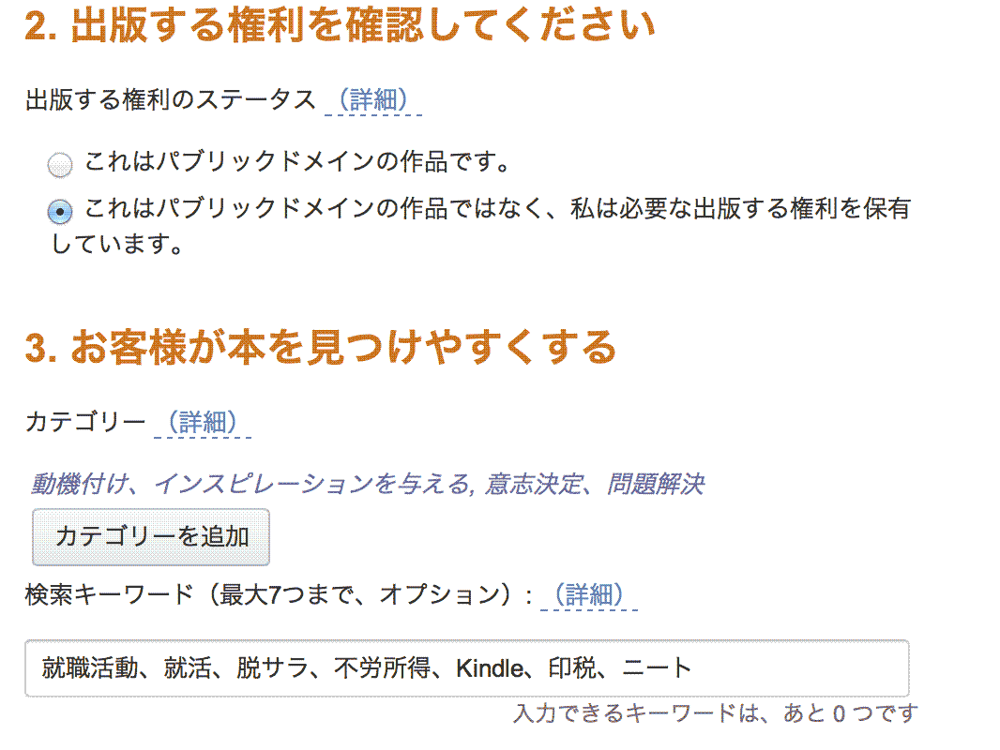

| Kindleで本を出す、テンプレートで、３日間で書いて出版・実用本の書き方 桜風涼の実用本 | |
| 桜風涼 | |
| Nabex Shuppan (2013) | |
テンプレートで簡単に書ける
「実用書の書き方・実践編」
桜風涼
はじめに
誰でも簡単に、自分の本を出す、これが本書のコンセプトです。プロが長い時間を掛けて習得する技術をテンプレートにしました。ですから、誰でも確実に本が書けるようになります。
しかも、この本を読み始めてから３日間で一冊書いて、出版してみましょう！
え？ そんなに書けない？
そうですね、でも、Ａ４にびっちり書く報告書で６～８枚程度で一冊になりますよ。
え、それでも書けそうにない！
いいでしょう、本書の指導方法では、ブログの日記程度（の文字数）の記事を書き並べるようなコンセプトで執筆してみますよ。もっといえば、１つの話題が２００～４００字、これをいくつか並べて一冊にします。その話題（見出し）の出し方がこの本の神髄です。

自動記述テンプレート。
簡単に言えば、Ｔｗｉｔｔｅｒを２本で１つの話題。テーマを見つけるテンプレートを埋めている内に出てくる話題（見出し）に沿って、Ｔｗｉｔｔｅｒ程度の文章を書いていきます。たったそれだけで本格的な実用本ができてしまいます！
自分の本を出したい！ これは誰でも一度は考える、人生の目標ともいえる事業です。これまでの出版界は、作家やその道の専門家が出すものと決まっていました。そうでなければ、特別なコネか資金がないと本が出ませんでした。
しかし、巷の本を見ると、これでよく出版できたというものを数多く見かけます。また、この程度でこんなに売れるのか、と羨ましくもなります。
しかし、これからの出版界は変わります。電子書籍の登場で、誰でもすぐに本を出せる世の中になりました。電子書籍の先進国アメリカでは、ヒット作の多くが電子書籍出身です。つまり、電子書籍である程度売れた作品を紙の本にして、さらにベストセラーにするというのが定番化しています。
そこで、本書は、これまで本を書いた事がない人向けに、誰でも簡単に一冊を書くためのノウハウをテンプレートの形で提供します。また、自分の本が出版社の目にとまり、紙の本になるチャンスが来た時のために、編集用語や出版界の常識等も紹介します。
一部の人に独占されていた出版を、本当に才能ある人に開放したいというのが願いで書きました。とにかく書きたい、その気持ちを形にしようではありませんか！
平成２５年７月１３日 自宅居間にて
桜風涼
第一章 実用書の基本
この章では、実用書の書き方の流れをマスターします。
そして、どんなテーマの本をどのくらいの深さ（難易度）で書けばいいのか、そして、どのくらいの分量で書くのか、それを自分で考えられるようにします。楽しく始めましょう。
第一節 三日で出版の学習スケジュール
この本の最大のポイント、そう、３日間で１冊、本当に本を出してしまおうというコンセプトです。もちろん、ぶ厚い本を書くのは大変ですから、最低限度、商品になる本を書いてみます。もちろん、その後、本格的な実用本を書く技も紹介しますね。
どんな本を３日間で書くの？
３０ページで９９円で売る、実用的な本を書いてみます。文字数にして１万２千字くらいです。４００字詰め原稿用紙で３０枚です。
え？ そんなに書けない？
いえいえ、その書く方法をご紹介するのが、この本の役目ですよ。とにかく、小さな本でも一冊書いて出版してみましょう。
３日間のスケジュールはコレ
さあ、大忙しですよ。３日間で本を書くためには、次のスケジュールで頑張りましょう。
１日目：第３章まで読み切ってください。同時に僕のブログからテンプレートをダウンロードします。それを使いますよ（ダウンロード先は後ほど）。初日は、自分が何を書くのか、それをはっきりさせる作業です。「テーマの絞り込み」っていいます。そして、テンプレートに記入していくと、なんと、プロ級の詳細な目次が完成しますよ。
２日目：第４章でコツを学びながら執筆します。といっても、２００～４００字の文章を書くだけです。その話題（目次）は１日目に完成していますよ。
３日目：残りの第５章と第６章に目を通しながら、表紙を作り、Ｋｉｎｄｌｅ Ｄｉｒｅｃｔ Ｐｕｂｌｉｓｈｉｎｇにユーザー登録して、さあ出版！
とにかく、短期集中！ まずは小さな本を出版してみましょう。その後、２００ページ級の本格的な出版を目指します。
第二節 出版の流れを把握せよ
まず、出版までの流れを把握しておきましょうね。出版すると聞くと、それだけで尻込みしてしまう人が多いのですが、３日間で出版できちゃう手軽さなんですよ！
その原動力がアマゾンのＫｉｎｄｌｅ（キンドル）です。
Ｋｉｎｄｌｅは誰でも出版社として電子書籍を出して売ることができる画期的なシステムです。もちろん出版しても費用はかかりませんよ。本が売れたときに、その売り上げを著者（あなた）とアマゾンで分ける仕組みです。それがＫＤＰ（Ｋｉｎｄｌｅ Ｄｉｒｅｃｔ Ｐｕｂｌｉｓｈｉｎｇ）です。
Ｗｏｒｄのようなワープロソフトがあれば、誰でも簡単に電子書籍が作れます。ＡｐｐｌｅでもｉＰｈｏｎｅやｉＰａｄで読むことができるｉＢｏｏｋｓがあり、こちらは後発ながら、専用のワープロソフト（ｉＢｏｏｋｓ Ａｕｔｈｏｒ）が無料配布されているので、すぐに執筆が可能です。ただし、売り上げという点では、Ｋｉｎｄｌｅ Ｓｔｏｒｅが圧倒的です。ですから、初めて本を出すならＫｉｎｄｌｅです。具体的な出版社登録方法や電子書籍ファイルを作る方法は、第５章で詳しく、具体的に書いていますので、そちらをご覧くださいね。
それでは、本ができるまでの流れを紹介しましょう。
第一項 電子書籍を出版するのは簡単だ！
この本をお読みだということは、すでにＫｉｎｄｌｅはご利用になっているということですね。もしくは、ｉＢｏｏｋｓをご利用ですね。
本を書き始める前に、Ｋｉｎｄｌｅで出版するということがどんなことか、簡単に説明しておきます。
誰でも無料で、出版できるぞ
Ｋｉｎｄｌｅや他の電子書籍の特徴は、「自分が出版社だ」ということです。つまり、自分が出したい本は（公序良俗に反しない限り）、誰でも何でも出版できるということです。書きたい時に書いて、出したい時に出せます。決済は自動的に行われ、印税が銀行に振り込まれます。いつ、どの本が何冊売れたかも、ほぼリアルタイムに分かります。
ＫｉｎｄｌｅやｉＢｏｏｋｓ（ＡｐｐｌｅのｉＰｈｏｎｅやｉＰａｄで読める電子書籍サービス）などは、著者（出版社）登録するだけで、出版可能です。
登録時に必要なのは、銀行の口座（日本の主要な銀行なら大丈夫、僕は千葉銀行で決済）。ただし、ＫｉｎｄｌｅでもｉＢｏｏｋｓでも、決済自体はアメリカで行われるため、アメリカの免税手続きが必要です。免税手続きをしないと３０％の源泉徴収が行われてしまいます。
このあたりの細かい手続きは、第５章で説明します。
書く内容・ジャンルは、あなたの自由！
内容は児童書から一般書、小説、アダルトなど、何でもＯＫです。ただし、犯罪に繋がるものはダメ（当たり前）。ちょっと難しいのは、Ｋｉｎｄｌｅの場合、性的な表現があると「アダルトカテゴリー」に登録されてしまいます。こうなると、読者の検索結果で表紙が表示されないとか、Ｋｉｎｄｌｅ売場のトップで売れ筋紹介に出てこないなど、宣伝的に難しくなります。紙の出版社から出ている本の場合には、特に小説類は結構酷い性的な表現があっても一般カテゴリーになっています。
恐らくこれは、法的な出版元がどこになるかによって違うと思っています。紙の出版社の場合、内容表現に対するクレーム（法的に訴えられる）先がＡｍａｚｏｎでなくその出版社になるので、Ａｍａｚｏｎ（Ｋｉｎｄｌｅ）は矢面に立ちません。しかし、我々のような著者が出す場合は、最終的な販売はＡｍａｚｏｎになるので、出版する内容に対する自主規制は、Ａｍａｚｏｎの方針に従うことになると思われます。
Ｗｏｒｄや一太郎で書けば、即、出版！ 価格も自由
出版の方法はシンプルです。ワープロで書いて、Ｋｉｎｄｌｅ形式のファイルを作って、インターネットで登録するだけです。
価格は、自分で決められるし、変更も可能です。
誤字脱字や、時代に合わなくなったことは、いつもで修正が可能です。
出版手続きをしてから１２時間くらいで売り出されます。これも素早くていいですね。
いずれにせよ、ワープロさえあれば、何の投資も必要なく、完全に無料で本を出版することが可能なのです。
著者サービスも充実
Ｋｉｎｄｌｅは、著者サービスも充実しています。
著者のプロフィールと著作一覧の載った「著者ページ」を作れます。非常に簡単です。

著者ページには、略歴、出版した本の一覧、講演会などの情報を掲載することができます。もちろん、無料です。
さらに、前述しましたが、ＫＤＰでは、自分の本の売上がリアルタイムに見られます。どの本がどれだけ人気があって、どれがダメか、そんなことも一目瞭然です。ブログに書いたら売れたとか、どこで紹介されたら売上が上がったなど、分析の資料にもなります。つまり、著者になるだけでなく、自分の本を自分でプロデュースして、売り上げをどんどん上げることが可能です。
ちなみに、出版社と仕事をするとどうでしょうか？ 新聞の下の欄に、新刊書籍の広告がありますね。そう、出版社と仕事をする利点はいくつかあり、宣伝をしてくれるのが、その最たるものです。逆に言えば、出版社がやってくれていることを、電子書籍は著者がやらなければならないことも事実です。しかし、僕の経験では、紙の本でも、結局は著者の努力以上の宣伝はありません。要するに、紙の本を書いてきた僕でさえ、電子書籍の方が魅力満点！ そして、自分の宣伝方法まで用意してくれているＫＤＰには感謝しています。
どのくらい売れるの？
これは非常に難しい。売れない本は、ぜんぜん売れません。売れる本は何千万円も稼いでいるそうです。
控えめに言えば、僕の本は、ひと月に数万円というのが実状です。ただし、ここがポイント！
書店の本は半年くらいで引き上げられてしまうことが多く、つまり、半年でどれだけ売れるかが勝負になってしまいます。
つまり、紙の本を書くと、その寿命は半年！ がーん！
ところが電子書籍は永久に売場にあるので、永続的に印税が入ります。
１ヶ月に５万円の本が２冊あったら、月収１０万円。もう、国民年金を超えました！ ５冊あったら２５万円。厚生年金を超えました。１０冊あったら、一流サラリーマンの月収を超えます。
今、僕は、月額５万円の本が何冊書けるか、それを努力、うん、努力をしています。年に５冊の売れる本が出せれば、数年で月収が１００万円を超える計算ですね。
ちなみに、Ｋｉｎｄｌｅで月額５万円の本というのは、どのくらいのレベルなんでしょうか？
僕の本で毎月５万円を売り上げているものを、もし出版社から紙の本で出したとしたら、おそらく１００万円くらいの印税だと思います。これはこれまで１５冊の紙の本を出してきた経験論です。ただし、このクラスの本は、増刷されることは希です。つまり、初版売り切りで印税はストップします。
しかし、同じ内容の本を電子書籍（Ｋｉｎｄｌｅ）で出し、月額５万円で２０ヶ月以上売れれば、紙の本より儲かったことになりますね。いえいえ、紙の書籍の印税率は、昔は１０％だったのに、今では６％前後。え？ これって作家に死ねということ？ つまり、今、紙で本を出すと、初回印税（刷り部数印税）は６０万円程度になってしまっているのです。ということは５万円の電子書籍なら１２ヶ月で紙の本の売り上げを超えます！ しかも、電子書籍（Ｋｉｎｄｌｅ）は、発行当初の売上は、紙の本とは違って、発売当初の横ばいか、徐々に売上が上がります。これは電子書籍のユーザーが徐々に増えているからだと思います。いずれにせよ、紙の本よりも儲かりそうです！
第二項 本を書くのに必要なソフトは？
まず、この本で使っているワープロソフトなどを紹介します。これを持っていれば、本書を読み易いと思います。そのソフトが絶対になければダメだということではありませんが、僕もいろいろなソフトを試した結果、一番いいと判断したものを紹介します。
なお、実用書の多くは縦書きです。ですから、本書では縦書き書籍を作ることを前提に解説を進めます。もし、横書き（技術書など）でも、何をやるのかは同じです。
日本語ワープロ【一太郎 玄】があれば完璧！
ジャストシステムの『一太郎』の最新バージョンは、Ｋｉｎｄｌｅ形式の出力が可能です。非常に良く出来たアプリです。一太郎で縦書きにして、ルビ（ふりがな）や太字強調など、僕にとって、最終仕上げに書かせない道具になっています。これさえあれば、実用書でも小説でも仕上げまで作り上げられます。
使い方は、Ｗｏｒｄなどのワープロと同じです。最新バージョン『一太郎 玄』は、こんな画面です。
このアプリをお勧めする幾つかのポイントを紹介します。
１：完全に日本語対応
２：ルビ（ふりがな）が簡単に入る
３：電子書籍向けのテンプレートがある
４：Ｋｉｎｄｌｅ出力ができる（ｅＰｕｂも可能）
５：凝った目次が簡単に作れる
６：シナリオ形式など、多彩なレイアウト機能
７：外部リンク（ＵＲＬでＨＰ表示）
８：縦書き表示、縦書き入力
実は、日本語でＫｉｎｄｌｅ形式を作るには、いくつかの無料ソフトがあるのですが、エラーが出てうまく動作しないことがあります。特にｉＯＳ（ｉＰｈｏｎｅやｉＰａｄ）で購入できないケースもあるので、僕は、最終出力は一太郎にしています。
僕は故：団鬼六先生の最後の弟子といいますか、先生と一緒に仕事をさせて頂いていたのですが、先生の事務所から電子書籍で本を出す時のアドバイスもさせて頂いています。団鬼六事務所では、Ｗｏｒｄで書籍化しようとしていたのですが、やはり日本語ではうまくいかず、最終的には一太郎で出版しています。横書きならあまり問題がないらしいのですが、長文の縦書きの電子書籍化は、まだまだ発展途上です。その最先端が一太郎だということになります。
プロ御用達【Ｓｃｒｉｖｅｎｅｒ】で、楽々執筆だ！
ちょっと聞いたことのないアプリですよね。スクリブナーと読みます。
これは欧米で一番人気の執筆専用アプリです。小説から脚本（台本）、実用書、詩（ポエム）など、効率よく書くことができます。普通のワープロはレイアウトをきれいに見せるような機能がたくさん搭載されているのが特徴ですが、このスクリブナーは、文章の構造をきれいに整える機能が優れています。つまり長文向きです。
また、これもＫｉｎｄｌｅ形式のファイルを作れます。ただし、横書きなのと、欧米仕様の文字修飾なので、和書にはちょっと不向きです。不確実な情報ですが、２０１３年の夏には、日本語対応で縦書き機能が加わるそうです。
価格は４０米ドル。Ｗｉｎｄｏｗｓ版とＭａｃ版があります。クレジットカードで購入できます。Ｍａｃをお使いなら、Ａｐｐ Ｓｔｏｒｅで購入可能です。Ｗｉｎｄｏｗｓは、開発元のサイトで購入します。
実は、本書もスクリブナーで書いています。
簡単にどんなアプリか紹介すると、いわゆるアウトラインプロセッサーです。アウトライン（全体構造）を先に決めて、細部を書き込んでいくワープロですね。長文の執筆に必要な機能が強化されています。
集めた資料をまとめておくフォルダがあったり、目標の文字数を設定して、その進捗状況が表示されるなどなど。
特に書籍のような長い文章を書くのに適しています。章の入れ替えなどが簡単だし、章のあらすじ（概要）を見渡せるコルクボードがあり、ちょー便利です。
詳しくは、第６章で紹介します。
ただし、英語版アプリなので、メニューなどすべてが英語です。パソコン初心者だと、何をしていいか分からないかもしれません。
アウトラインプロセッサーは非常に強力な道具です。実は、一太郎にも、この機能が搭載されています。パソコンを使うのが苦手な人は一太郎だけで本を書く方が楽だと思います。
いずれにせよ、このアプリを使いこなすことで、書籍の書き方をマスターできるのではないかと思います。とにかく、プロの作家が心酔しているソフトです。
横書きなら、Ｗｏｒｄでも大丈夫！ フリーソフトでも使えるぞ！
さて、一太郎やＳｃｒｉｖｅｎｅｒがない場合はどうでしょうか？ お金をかければいいというものじゃないですものね。
実は、Ｍｉｃｒｏｓｏｆｔ社のＷｏｒｄ（ワード）でも、Ｋｉｎｄｌｅ形式の本が作れます。ｉＢｏｏｋｓ（ｉＯＳ）はもっとお手軽で、Ａｐｐｌｅ社が専用ワープロを無料で用意しています（ｉＢｏｏｓ Ａｕｔｈｅｒ）。
さらに、パソコンに標準搭載のメモ帳（Ｗｏｒｄ Ｐａｄ）やＭａｃのシンプルノートでも、もちろん執筆可能です。その場合、アマゾンが提供しているＫｉｎｄｌｅファイルの変換ツールを使います。実は、僕がＫｉｎｄｌｅ本を書き始めたときには、エディター（メモ帳のもう少し機能があるもの）で書いて、『青空文庫』形式でルビや章立てを行い、それを変換していました。これなら全部無料アプリで作家になれます！
これも、詳しくは第６章で説明する事にしましょう！
Ｋｉｎｄｌｅ ＰａｐｅｒｗｈｉｔｅやＫｉｎｄｌｅ Ｆｉｒｅ、ｉＰｈｏｎｅなどを用意
それから、読者と同じ読書環境を用意する事も大切です。実機テストという言い方もしますが、Ｋｉｎｄｌｅ端末やｉＰｈｏｎｅ、ｉＰａｄで自分の本を読んで内容の確認ができるようにします。最終的に読む機器のことを「実機」と呼びます。ワープロ画面は仮の姿です。実機に入れて、実際にはどう見えるのかを確認しないと読者と同じ気持ちになれませんよね。実機の画面で見た場合、改行が少なく見えたり、図版が見え難かったり、タイトルが長過ぎたり、いろいろな事に気付くものです。
通常の執筆活動では、まず、ワープロで執筆し、出来た原稿を紙に印刷して、読み直して「赤入れ」（赤ペンで直す所に印を付ける作業）をします。もちろん、このやり方でもＯＫです。
僕の場合は、完成（もしくは執筆途中でも）の原稿を実機に入れます。実機で読むと、いろいろな発見がありますよ。また、実機にはメモ機能や付箋機能、赤入れ（ハイライト表示）などがあるので、誤字脱字に印をつけたり、直したい所にメモを付けたりできます。
紙の本の場合、ゲラと呼ばれる裁断前の用紙に印刷されたもので最終確認をします。でも、実際の本とはちょっと違うので、結局は最終的な本になったときに、ああすれば良かった、こうすれば良かったと思うものです。
しかし、電子書籍は、自分の目の前に、完全な最終形があるわけです。これは素晴らしいことです。最終形になると、自分の文章を客観的に見る事ができるので、修正が楽しくなりますよ。
また、友人に読ませる場合にも、実機だとメジャーな感じがします。つまり、他人に胸を張って見せやすいということですよね。
では、次に本を書く手順を説明しましょう。
第三節 実用書を書く手順は１０段階だ！
さて、ワープロの準備はできましたか？ もう、書きたくてうずうずしているんじゃないでしょうか？ では、始めましょう。
まず、書籍を書く手順を紹介します。手順を紹介した後、テンプレートを使った本格的な執筆をしますから、とりあえず、この後、どんなことをしなければならないのか、それを頭に入れておきましょうね。
１：テーマを絞り込む
２：目次を作る
３：あらすじ（簡単な内容）を書き込んでみる
４：構成を見直す
５：執筆と図版作成
６：あらすじの見直しと構成の見直し
７：推敲
８：校正
９：出力
１０：出版
並べてしまうと、結構な手順ですね。でも、実作業はそれほど多くありません。もちろん、ほとんどの時間は文字を書く事と図版の用意になります。通常、出版社で本を出す場合、４番、５番、８番以降は編集者の仕事です。しかし、電子書籍は著者が全部をやるということになります。
それでは、テンプレートを使って書き始める前に、各段階をおおまかに説明しておきす。
１：テーマを絞ろう
では、順番に説明していきましょう。
最初にやるべきことは、どんな本を書くのか、「１：テーマの絞り込み」です。テーマを明確にしておけば、作業（執筆）のゴールが見えてきますよ。
例えば「釣り」の本を書くとします。「釣り」には、海釣りもあれば川釣りもありますね。どちらを書くのでしょうか？ 海釣りにしても、磯釣りもあれば投げ釣りもある。というように、テーマは広くも狭くもすることができます。しかし、自分が持っている情報（ネタ）や経験よりも外側の話は書けません。もちろん、プロは取材を通して知らないことや経験したことないことを書く技術があります。それでも、経験者の話ほどは面白くならないのです。
ですから、皆さんは、ご自分の持っている情報・経験に絞り込んで書かなければ駄目ですよ。
と言われても、どう絞り込んだらいいのか、よく分からないですよね。
それでは、今お読みのこの本を題材に説明しましょう。
１ テーマを決める
いまあなたが読んでいるこの書を書くに当たって、まず、大まかなテーマを決めました。こんな感じです。
１：この本は、初めて書籍を書くための手順書にする。
２：一般的な書籍は、フィクション、ノンフィクション、実用書、ビジネス書などに別れているので、今回は「実用書」にしぼる。
これが大まかなテーマです。いきなり、こんなに具体的なテーマを考えるのは難しいそう？ 大丈夫、テーマの見つけ方には色々な技がありますよ。実際のテーマの選び方は、第２章の中でテンプレートを使いながら説明しますね。
ここでは、とにかく、本を書くにはテーマを選ぶ必要があって、それをどこまで具体的でわかりやすくできるかが重要だと思っていてください。
２ 読み手を具体的に決める
次に、読者を思い浮かべます。つまり、自分が選んだテーマをどんな人に読ませたいか、それを考える必要があるのです。
本書では、次のように考えました。
１：初めて本を書く人向け
２：一般向け（児童書じゃない）
３：男女問わず（具体例の選び方が年齢や性別で変わることもがあります）
４：Ｋｉｎｄｌｅ読者
読者を具体的に決めることで、いい本が書けるんだ、と思ってください。
そして、テーマと読者が決まると、どのくらいの文章量、文章レベル（専門用語の使い方）、図版の数や内容が見えてきます。
３ 何のために書くか？
これ、意外に重要ですよ。
書籍を売って生活をしたいのか、それとも専門知識を本にして社会を啓蒙したいのか、文化人として名声が欲しいのか、それぞれによって書き方が違ってきます。
お金儲けで本を書きたいなら、売れるテーマを選ぶべきです。現在なら「健康」「ダイエット」「ビジネス」「経済」「芸能」などなど。趣味の本でも、人口が多いものであれば売れると思います。
社会に啓蒙というのは、教科書も含まれます。これまでいろいろな人を指導してきたというなら、そのノウハウを書けますよね。
文化人として名声が欲しい場合、きれいな本を作ればいいということになります。中身より表紙が重要かもしれません。
４ テーマが決まるという事は、題名を決める事
さて、ここまで分かってくると、もう、あなたは、お気づきではないでしょうか？ そう、テーマを絞り込んでいくと、本の題名が思い浮かんできませんか？ 実はテーマとターゲットを決めると、本の題名が決まるのです。
具体的な方法は、第２章「テーマを絞って売れる本を書け」で説明します。
２：目次を作る
テーマが決まったら、目次を作ります。
「目次立て」といいます。
目次は、読者のためにあります。でも、著者がどんな順番で、どのくらい書くのかという設計図にもなります。設計図のある本の方が、面白くなります。もちろん、ベテランなら適当に書いて、後で目次を作ることもありますが、希です。
出版社と仕事をする場合も、まず、企画書（どうしてその本を書くのか）といっしょに目次案を提出します。出版社も、その本を出すかどうかは目次の内容で判断するのです。
具体的にいえば、企画意図は「１：テーマ」です。中身は「２：目次」ということです。この段階で面白くない本は、売れません。だから、いい目次を作らなければならないのです。
そんなこといきなり言われても、まだ何も書いていないのに、目次を作るなんてできませんよ。
そうですね！ いきなり目次を作るのは大変です。ですから、テーマに沿って、書きたい事を箇条書きにすることからスタートします。箇条書きにしたアイデアを並べることで、目次ができていきます。テーマを作ったところで、ゴールは見えている筈です。そのゴールを目指して、ネタを並べるのが目次立てです。
持ちネタかどうか、そこで難易度が変わります
１冊の本を書き上げるのに、自分が持っているネタだけで足りるかどうかも、目次を作る事によって判断できます。プロは、目次の段階で、持っているネタ一覧、足りないネタ一覧を作っています。そうすることで、書斎で書く以外に、取材はどの程度必要なのかが判明するのです。
でも、持っているネタ一覧でほとんど書けてしまうなら、短時間で書籍が完成しますよ。足りないネタが多い時には、取材に時間がかかると判断できます。ちなみに、ほとんどが持っていないネタで書くのなら、テーマを再考した方がいいはずです。少なくとも、中心になる話題は自分のネタで書けないと、大変苦労するし、大間違いをはらむ可能性も大きくなります。
具体的には第３章「目次を作ろう」で説明します。
３：目次にあらすじを書き込もう！
目次が出来たら、目次の項目にあらすじを書き込んでみます。
あらすじといっても、構成するネタを箇条書きにするだけでも十分ですよ。目次を強化すると思えばいいのです。そう、実は、あらすじを書くということは、最初に作った目次をより具体的にする作業です。
意外に、この作業が楽しいものです。
自分の本がどんどん分厚くなっていくのです。目次が骨だとすると、あらすじは肉です。執筆して本文を書き加える事で血が通い、命が吹き込まれます。
あらすじをシノプシスというんだ！
映画でも小説でも、あらすじが命です。あらすじが上手く書けるようになるのが売れる作家、仕事が依頼される作家の条件です。
僕らは、あらすじのことをシノプシスと呼んでいます。
欧米ではＳｙｎｏｐｓｉｓと書きます。
研究社の『英和中辞典』によりますと、
ｓｙｎｏｐｓｉｓ
音節ｓｙｎ・ｏｐ・ｓｉｓ 発音記号/ｓɪｎάｐｓɪｓ｜‐ｎˈɔｐ‐/
【名詞】【可算名詞】
（《複数形》 音節ｓｙｎ・ｏｐ・ｓｅｓ 発音記号/‐ｓｉːｚ/）
１（映画・劇・書籍・論文などの）梗概（こうがい）、 大意 〔ｏｆ〕.
２一覧（表） 〔ｏｆ〕.
【語源】
ギリシャ語「共に見ること」の意
あらすじと言ってしまうと、物語の短縮したもののよう思えますが、違います。「おおよその意味」であり「一覧」できる状態のものです。ギリシャ語の「共に見ること」というのが象徴的ですね。しかも、複数形ですって！ つまり、箇条書きを発展させて、見やすくしたものだと思って下さい。
本を書くこと、それはシノプシスを書くことだ！
つまり、皆さんは目次を見ながら、そこに必要な部品（ネタ）をどんどん書き込む、それさえ進めば、執筆なんて簡単です。
自分のことで恐縮ですが、僕は、同じ月にこの本の他２冊を書いて出版しました。なぜ、そんなスピードで書けるのか？ それは目次立てとシノプシス出しが速いからです。定型の目次、定型のシノプシスさえマスターしてしまえば、この位は誰でも書けると思います。
でも、何か定型のフォームがあると思うと、尻込みしてなかなか書けないこともあります。ですから、手始めは、何でも思いついたものを箇条書きにすることからのスタートです。
詳しくは第３章「目次を作ろう」で！
４：構成を見直そう！
ラフな目次とシノプシスが溜まったら、それを並べ直して、再構成します。書きやすい順番に並べ直すということではありません。テーマに沿って、順序を考えてみるということです。
言葉でいうと簡単ですが、試行錯誤の連続です。実際には、こんな感じで思考が繰り返されます。
１：目次に沿って、ネタを振り分ける。
２：各章（や各節）に振り分けられたネタの多い少ないで、章（節）の分割や統合を検討する。
３：章の順序を入れ替えてみる。
正直な所、目次を作る段階で８割くらい完成しているときもあれば、シノプシスを充実させることで、やっと目次がそれらしい形になることもあります。
また、実際に本文を執筆している最終に構成が変わることもよくあることです。いずれにせよ、ラフな目次を作って、シノプシスを書き込み、目次の構成を見直すことで、本の全体像が見えるということです。何を書くべきか分からなくなったとき、目次の構成を見直してみると、本の執筆が進むのです。
まとめますよ！
１テーマを決める、２目次を作る、３シノプシスを書き込む、４目次の構成を見直す、ここまでが一連の作業です。
目次を読むだけで本の内容がわかるくらいまで、書き込みと構成をすれば、あとは執筆するだけです。シノプシスが充実していれば、それを補強する程度で本文も出来てしまうかもしれません。
後ほど、テンプレートをお見せします。
５：執筆と図版作成するぞ！
さて、いよいよ執筆の開始です。
すでに目次とシノプシスが完成しているので、書くのはそれほど難しくはないはずです。
言い換えると、売れる本は目次が面白い！ 目次が面白ければ、本はあっという間に書けてしまう。
なぜあっという間に書けるのかと言えば、例えばビジネス書なら、普段のお仕事で作った文書や資料を引用するだけで完成してしまうものもあります。僕の本【誰でも書ける！「ストーリーの書き方・入門」】は、例文として、数多くの小説原稿や脚本原稿が掲載されています。これは、僕の過去の作品からの引用なので、ほとんどコピー＆ペーストです。全体の文字数は多いのですが、過去の作品を使っているので、手で書いた部分は、全体の８割くらいじゃないかと思います。
執筆は、目次とシノプシスを参考にして書いていきます。物語ではないので、前後の章とつなげることを意識するより、それぞれが単独で読んでも意味が通じるような書き方を目指します。
具体的には、文体をどうするとか、文字数をどうするとか、いろいろなテクニカルなことが存在します。意外に、字下げや禁則を知らずに書いてしまう人もいるので、作家としての最低限度のお行儀も確認しておく必要があります。
図版の入れ方が読みやすさを左右する
図版が入るか入らないかで、読みやすさが変わってきます。逆に言うと、図版のない書籍は、読み難いです。かといって、図版を増やすには、手間かお金がかかります。出版社では、プロのイラストレイターや図版を作るデザイナーがいます。本当の意味で紙の書籍に勝つ本を作るには、図版をどうするのかがネックになります。
しかし、最近はＷｏｒｄでもＰｏｗｅｒｐｏｉｎｔでも、奇麗な図版が作れるようになりました。どちらのソフトも作った図版をＪＰＥＧ画像（写真素材）にすることができるので、それをつかうといいでしょう。本書でも、そうしています。
きれいなら、手書きの図版も効果的です。逆に文章が苦手な人は図版で勝負するのもいいと思います。むしろ、ぼくのように文章でガンガン書くより、図版ですっきり説明の方が、読みやすいと思います。え？ この本は図版が少ない、確かに。
図版１個は４００〜８００字分だ
ちょっと具体的な話になりますが、図版を入れるスペースは、電子書籍の場合、４００〜８００字分のスペースになります。４００字で説明する事柄が１個の図版に置き換えられるなら、そちらの方がいいということになります。
最低でも１０ページ（４０００字）に一回は図版が登場しないと、ちょっと硬い本に見えると思います。
イラストまで入れば、そうとう高級な本になります。絵が得意な人なら、イラスト満載もいいと思います。
６：再度、あらすじと構成の見直しが楽しい
執筆が始まって実際に本文を書き進めると、順番を入れ替えた方がいいものや、統合してしまった方がいいもの、重複した話題なので削除した方がいいものなど、いろいろ見えてきます。本を書くということは、そういうことなのです。
しかし、そういった再構成をするには、全体が見えるような技を駆使しないとダメです。そのためには、前節で紹介したＳｃｒｉｖｅｎｅｒ（執筆専用アプリ）などを使って、構成の再構成が効果的です。一太郎ならアウトライン編集や目次一覧が役に立ちます。
本書では自動記述テンプレートで、ある程度、全体が見えるようにしていますよ。
「書くことがない」は構成の失敗
目次立てやシノプシスでは重要だと思って目次に入れた項目が、実際に書いてみると、ほとんど一言で終わってしまうということも、よくあることです。つまり、「書くことがない」という落とし穴です。
こんな時は、構成（目次立て）に欠陥があったということです。しかし、この欠陥は、前向きな失敗です。なぜなら、書くことがないのは、他で同じことを説明してしまったからです。ということは、先に書いてしまった部分を読み直すと、何かヒントがつかめます。
このあたりのテクニックは、第４章で説明します。
７：完成は間近！ 推敲だ！
さて、目次に沿って、全ての原稿が書き終わりました。次にやることは、最初から最後まで一気に読むという作業です。これを推敲といいます。
長い書籍の場合、章ごととか節ごとにバラバラに執筆することになります。最初から順番に書いているつもりでも、読み直してみると、前後がつながっていないこともあります。構成を変えた結果、後ろにあった文章を前に移動させて、前後の整合性が崩れることもよくあります。ただ、あまり推敲に時間をかけすぎると、面白みの無い本になることもあります。推敲に必要なことは冷静で客観的な読み方です。
実機で推敲が効率良し！
冷静で客観的な読み方で手助けになるのが、実はスマホや電子書籍専用端末で読むと言うことです。電子書籍のいい所は、読者と同じ環境、つまり、Ｋｉｎｄｌｅ端末やｉＰａｄで著者も読み直しができることです。電子書籍を読む端末を実機といいますが、実機で自分の文章を読むと、けっこう感慨深いものがあります。
実機を利用して、最初から最後までじっくり読んで、間違いを見つける作業、これが重要です。
この時に「赤入れ」といって、紙の本なら、ペンで間違った場所に印を付けていきます。実機でも同じ作業ができるんですよ！
詳しくは第４章で。
８：文字校正は慎重に！
執筆も終わりました！ 嬉しい！ 出版まではもう一息です。
さて、出版社では、この段階で「初校」という見本刷りが作られます。ここで、誤字脱字のチェック、差別用語の排除、不適格な表現の修正を行います。プロの校正マンがいて、なるほど～と唸る位、直してくれます。
さて、電子書籍で、自分だけで出版する場合、プロの目が入らないので怖いですね。誤字脱字はワープロが指摘してくれので、ある程度は排除できます。でも、差別用語は難しいです。ぼくも２０年以上マスコミで仕事をしてきたので、おおよそは知っています。その一例を紹介しましょう。
差別用語は自主規制だ
あえて差別用語だとされている表現をお見せします。
「この仕事は片手落ちだ」
この【片手落ち】が障がい者の差別になるとのことです。
【子供】は子を供する（あげてしまう）の意味なので、【子ども】と書く。
こんな感じです。ただし、この差別用語は、新聞社が自主規制する形で、「差別用語辞典」をつくっています。マスコミ・出版各社がそれを参考に校正をしています。つまり、自主規制です。
分かりやすい差別用語は排除するにしても、僕はあまり深刻になる必要はないと考えています。もし、差別用語で訴えられる状況がきたら、その時はベストセラーになったときなので、その時にプロに頼んで直してもらって、差し替えるだけで十分です。
電子書籍を書く今のあなたが気をつけるのは、人種差別の用語だけです。
９： 出力と動作確認でドキドキ！
校正も終わりました。あとは出版するだけです。
ここで必要なのは、売り場であるＫｉｎｄｌｅやｉＢｏｏｋｓ Ｓｔｏｒｅのユーザー登録と、表紙画像、宣伝文句（本の内容紹介）です。
Ｋｉｎｄｌｅの場合、本文と表紙を専用サイトへアップすると、両者をくっ付けて、最終的な売り物であるファイルに変換してくれます。それを使って、最終チェックを実機で行います。また、自分が持っている実機（端末）以外のもので読む場合のシミュレーションもできます。
エラーが出ることがあるぞ！
ワープロで作っている時はきちんと表示できたのに、Ｋｉｎｄｌｅサイトで変換すると読めない、ということが起こる場合があります。僕の場合、短編小説の２編が、ｉＯＳで読めないというエラーが出ました。当時はフリーソフトだけで作っていたので、なんらかのバグでエラーになったようです。
執筆ソフトを一太郎に変えてからは、エラーは出ていません。つまり、本を出すためには、信頼できる執筆環境が大切だということになります。
１０： 出版と宣伝の開始！
最終的な出版をするためには、前述した表紙や宣伝文句が必要になります。これで売上が変わってくるので、本当は、ここだけプロに任せるのも手かもしれません。
しかし、そんなにお金をかけるわけにもいかないですよね。今はネットの時代です。表紙デザインの素材集を無料で公開しているサイトもあります。フリーの画像もたくさんあります。それらを組み合わせて、表紙を作ります。
表紙と本文（ｍｏｂｉファイル）をＫＤＰへアップして、「出版する」というボタンを押すと、内容の審査が始まります。およそ１０時間くらいで審査が終わります。普通の内容なら、そのまま出版されますが、性的な表現があると、その旨がメールで通知されます。異論がある場合にはメールに返信するか、表現を変えて再審査してもらいます。
すべての審査が終わると、「出版されました」というメールが来ます。本が売れたかどうかは、ＫＤＰページで確認できます。
売上を見ながら宣伝や表紙を変えてもいいのだ！
ここが電子書籍のいいところなんですが、取りあえず作ってみて、売上の動向をみながら、タイトルや表紙、宣伝文句を修正することができます。例えば若者向きに作った本なのに、実際には高齢者が買ってくれていたなら、高齢者向けに修正すればいいのです。
あとは、日々の宣伝も重要です。つまり、ブログやＴｗｉｔｔｅｒ、ＦａｃｅｂｏｏｋやＭｉｘｉなどで書名や売場ＵＲＬを露出します。このあたりのノウハウも第６章で紹介します。
コラム１「ここがプロの秘密」
ちょっとしたことで売り上げが変わるのが電子書籍の面白いところであって怖いところです。そこで、本を書き始める前の心構えを紹介しましょう。
類似の本を調べよう
テーマとターゲットが決まったら、類似の本を捜しましょう。あなたの書きたい本が、そのまま、もしくはそっくりなものが出版されているかもしれません。正直な話、僕自身も、この作業を怠って、類似本の中に自分の本が埋もれてしまったことがあります。
インターネットでいろいろ検索してみて、必要なら購入してみることが大切です。特に、その分野がどんな本が人気なのか、これは今後の執筆で重要になります。戦う前に敵を知れ、ですね。
オリジナルテーマ、実は落とし穴かも！
逆に、書きたいものがあなただけしか考えついていないテーマは、実は売り難いとも言えます。なぜなら、読者がぜんぜんいないかもしれないのです。もし、あなたが書きたい本があなた独占テーマの場合、大ヒットかぜんぜん売れないか、どちらかになる可能性が高いのです。でも、Ｋｉｎｄｌｅなら長年販売することができるので、取りあえず書いておくのが得策ですよね。
もし、あなたオリジナルのテーマだったら、表紙やタイトルを、一般的なものに似せてみるなど、一般的な本、つまり、誰でも読める内容だと分からせる工夫が必要かもしれません。
いずれにせよ、類似の本を勉強するのは大切です。
出版時期で初速が変わる！
今書いて、今売る、これが電子書籍の長所ですね。
ただ、出すタイミングは重要です。なぜなら、あなたの本を宣伝してくれる人にとっては、季節や流行が重要だからです。いい本であれば、いつもで売れるのですが、宣伝しないと売れない。宣伝する人は、タイミングを重視しています。
また、出版のタイミングと事前の宣伝活動を連係するのも大切です。インターネットの時代ですから、自分のブログ、Ｔｗｗｉｔｅｒ、Ｆａｃｅｂｏｏｋなどなど、「もうすぐ、こんな本が出ます」というのが重要です。そういった宣伝が十分に整ってから出版することも大切です。
また、本が売れる月、売れない月というのもあります。連休の前日は本がよく売れます。ゴールデンウィークや夏休み前など、よく売れます。そういうタイミングも利用すべきです。
逆に年度末など皆さんが忙しい時期は、あまり本が売れません。そういったことも気にする必要があるわけです。
売れる本は、毎日売れる！
非常に当たり前なのですが、売れる本は、何もしないでも毎日売れます。知名度によって売れる冊数は違いますが、コンスタントに売れます。おそらく、検索キーワードが良かったんだと思います。
売れない本は、五月雨式に売れます。初速が良くとも、いずれ売り上げが低いところで安定します（全然売れないこともあります）。
売れる本は、より売れるように進化させるのが電子書籍の書き方です。つまり、手直しをしたり、情報を増やします。
一方、なかなか売れない本は、宣伝のやり方を工夫します。さらに、内容の総点検も必要です。
いずれにせよ、本はあなたの子どもみたいなものです。生まれた瞬間から立派な成人になっている本もあれば、ヨチヨチ歩きの本もあるのです。ですから、本が売れないときは、売れるように何らかの手立てをすればいい、それだけです。
第二章 実践・テーマを絞って売れる本を書け
では、ここからが実践です。３日間で出版、いよいよですよ！
まずは、テーマの絞り込みをマスターしましょう。ぼくが出版のコンサルティングをした時の実例を使って解説しますね。
なお、この章では、実習形式で解説を進めます。いくつかのひな形を用意しました。実際に、テンプレート（ひな形）に言葉を埋めることによって、テーマの絞り込みを行いますよ。
今回使うテンプレート
やっとテンプレートが出てきました！
具体的な使い方は、徐々にお話します。テンプレートに言葉を書き込むことで、実用書が完成に向けて動き出しますよ。
テンプレートは「桜風涼の作家ブログ」よりダウンロードできます。
www.i-cinema.tv
ブログ中の「執筆用テンプレート集」（タブ）を開いて【自動記述テンプレート】をダウンロードしてください。これはエクセル（Excel）ファイルです。全部で５ページあります。最初が表紙で、使い方を書いておきましたよ。
あ、そうだ！ パスワードが必要です。ファイルを開くには【Haruurara】（はるうらら・頭文字は大文字）と書き込みパスワードが【Natsunosuzumi】（夏の涼み・頭文字は大文字）です。
そして、次の「１」からがスタートです。

内容を抜き出してみますね。
Ａ：あなたの初期テーマ
著者：（ ）
仮テーマ：（ ）
ターゲット：（ ）
目的：（ ）
【著者名】はどうしますか？ 本名でもいいし、かっこいいペンネームでも結構ですよ。
【仮テーマ】は、今思い浮かんでいる「書きたいこと」を書きましょう。何でもＯＫです。
【ターゲット】とは、読んでもらいたい読者の種類です。若い人だとか男性だとかをかきます。
【目的】は、印税生活をしたい、有名になりたい、販売促進のツールにしたい、などなど。書籍も、何のために書くかで書き方が変わってくるからです。
なお、テンプレート（Ｅｘｃｅｌファイル）は、緑色の部分（セル）にだけ記述してください。緑の部分に記述することで、テンプレートの次のページが更新されるようになっているのです。
自動記述テンプレートの記入例
では、実際にやってみますよ。
記入例
著者：お灸マッサージ医院の先生（女性）
仮テーマ：お灸で健康になる
ターゲット：ちょっと病んでいる、健康に不安がある人
目的：お灸の良さを普及させたい。著者としての名声がほしい
このようなことを記入していきます。
物書きになるコツは、文字と対話することです。頭の中で考えを練るだけでなく、実際に文字にしてみることで、新しいアイデアが生まれ、何をするべきか分かってきます。本書で出てくるテンプレートは、そうした文字との会話を行うためのものです。
では、テーマの絞り方の練習をしてみましょう。
課題１：お灸の実用本を作ろう
それでは、具体的な例でテーマの絞り込みをしてみましょう。こんな著者があなたの前にいます。その人がやりたいことをテンプレートに記入しました。このテンプレートを元に、実用書にふさわしいテーマとは何か、まず、その感性を手に入れてください。
お灸の実用本のテーマ
著者：お灸マッサージ医院の先生（女性）
仮テーマ：お灸で健康になる
ターゲット：ちょっと病んでいる、健康に不安がある人
目的：お灸の良さを普及させたい。著者としての名声がほしい
この先生は、このような事で本を書きたいそうです。
あれ、このまま本になりそうですよね。
いえいえ、プロから見ると、これでは本になりません。
ぜんぜん具体性が足りないのです。
実用書にするためには、もっとテーマを実用書向きに直さなければならないのです。
これを「テーマの絞り込み」といいます。
やってみましょう！
練習１：漠然としたテーマを具体的に！
まず、「お灸で健康になる」は、かなり漠然としています。
漠然としているという意味がおわかりでしょうか？
そこでクイズ、次の２つのテーマ、実用書になりやすいのはどちらでしょう？
１：「お灸で健康になる」
２：「健康になるお灸」
どうですか？ １と２では、どちらが具体的に感じますか？
（答えは次ページ）
回答：簡単ですね。２です。
解説
１は「お灸」というよく分からないアイテムと、健康という漠然とした状態がダブルで並んでいます。昭和３０〜４０年代生まれの人なら、「お灸＝健康」というイメージがあるかもしれません。でも、その下の世代になると「お灸＝折檻」という文学的なイメージがあるので、１のとらえ方がオカルト的に感じられるかもしれません。
（自分が見つけたテーマが、実は自分の世代にしか通じない可能性を考える癖も必要です）
つまり、１は世代によって受けるイメージが違うし、お灸で健康というのが漠然としすぎているということです。ただし、「健康になる」という動詞になっている分だけ、ちょっといいかな。
対して２はどうでしょうか？ 「健康になる」というのは、行為・行動を指し示しています。さらに、「健康になるお灸」というと、数あるお灸の中に健康にいいものがある、という具体的なイメージを想起させます。１よりは、ちょっと具体的になってきましたよね。
ベン図にしてみると、テーマの広がりがわかってきますよ。
「お灸で健康になる」は、お灸が外側で、健康が内側です。つまり、健康にならないお灸もあるという構造です。
でも、「健康になるお灸」だと、ターゲットがはっきりしてきましたよね。
ただ、これでもまだ、テーマとしては漠然としています。
読者想定（ターゲット）からもっと具体的に考えよう
今回は、ターゲットを「ちょっと病んでいる人・健康に不安がある人」と絞り込まれています。もしあなたがお灸の先生なら、どんな人に何をしてあげればいいか分かるはずですよね。テーマとは「どんな人に何をする」が明確のほどいいのです。逆に言うと、ターゲットを具体的に想定していない場合には、実用書としてはつまらないものになってしまいます。
それでは、このお灸の例で、読者（ターゲット）とテーマを連動しましょう。
仮テーマ２：「健康になるお灸」
ターゲット：ちょっと病んでいる、健康に不安がある人
さて、あなたなら、テーマをどう絞り込みますか？
つまり、このままの「健康になるお灸」では、取り上げるお灸の技が多過ぎて本にならないし、読み手も自分に適した本かどうか、今ひとつ分かりません。
余談ですが、「病気が治る」というのは、本の世界では要注意です。病気が治るかどうかは、医療で認められた科学的・医学的証拠に基づく必要があります。また、医療行為になってしまうと、医事法にも抵触します。注意が必要です。
そこで、僕は先生に聞きました。お灸でできることは何ですか？
「なんでもです！」
たしかにそうかも知れません。でも、それでは本になりません。それこそ、百科事典のようなサイズになってしまうかもしれません。
普段、どんなお客様（患者と言えない：医事法がらみ）が来ますか？
「病気の症状で苦しんでいる方、だるい、肩が痛い、腰が痛い、息が苦しい、女性の冷え性、ホルモン不順などですかねぇ」
さて、ここまでの情報で、あなたならどんなテーマに絞り込みますか（書き換えますか）？
練習２「健康になるお灸」と「病んでいる人」から、もっと具体的なテーマを箇条書きにしてみよう
どうでしょうか？ 考えてみてください。
仮テーマ２：「健康になるお灸」
ターゲット：ちょっと病んでいる、健康に不安がある人
では出題します。
ターゲットである「病んでいる人」に響くテーマ（題名）を３つ以上、挙げてみてください。
（答えは次ページ）
回答例（これを暫定テーマ１としますね）
１：肩こりに効くお灸１００パターン
２：冷え性に効く簡単お灸
３：腰痛に効くお灸
４：何となくだるいが改善、お灸の素晴らしさ
ぼくは、こんな感じのテーマ（題名）を思い浮かべました（３つじゃなくて４つも挙げちゃいましたね）。
いかがでしょうか？ このくらいはっきりしてくると、読みたくなってきますよね。
もちろん、この段階では、まだ１文字も書いていないので、暫定的なテーマでしかありませんよ。書き進むにしたがって、テーマや題名が変化するのはよくあることです。それでも、取りあえずのゴールが見えて来ますよね。
他のテーマも考えてみました。
回答例２（暫定テーマ２）
１：主要なお灸つぼ、１００の解説
２：上半身のお灸つぼ５０、下半身のお灸つぼ５０
３：ホルモンバランスのための５０のお灸つぼ
４：座ってできるお手軽なお灸つぼ１００選
先ほどの暫定テーマ１とずいぶん違いますよね。違いがどこにあるか、そこがポイントですよ。
暫定テーマ１は、具体的な症状をテーマにしています。
対して暫定テーマ２は、カタログっぽいですよね。
ただし、「お灸」と「つぼ」というキーワードで、「つぼにお灸する」ということを分からせています。
さて、この２つの違い、これを使い分けたいのです。
暫定テーマ１は、どんな性格かわかりますか？
暫定テーマ２は、どうですか？
この章では、これが使い分けられるようになっていただきたいんです！
暫定テーマ１は「読者の悩み」、つまり「症状」に合わせたテーマの絞り込みです。こんなことに困っている人に読んで欲しい、というテーマの絞り方ですね。
これを「読者優先テーマ」と呼びましょう。
では暫定テーマ２はどうでしょうか？ こちらは、先生の技、つまりツボの知識に焦点を当てたテーマの絞り込みです。
これは「著者優先テーマ」と呼びましょう。
読者優先、著者優先、どちらのテーマにするか？
実用書の書き方のポイントは、読者優先か著者優先かの２つがあります。大学で読む専門書は、典型的な著者優先ですよね。
ただし、どちらで書くにせよ、載せるネタは、それほど変わりません。しかし、構成は変わってきます。
現状に困っている読者ほど本の購入意欲が高いので、読者優先テーマの方が売れます。著者優先テーマだと、同業者か、お灸に関心があったりプロになりたい人が買います。
どちらがいいのかというのは、本を書く目的によって変わります。ですから、今回は「お灸の啓蒙と著者の名声」が目的です。そうなると、暫定テーマ２「著者優先」の方がいいといえますね。
もう一度、立場を変えてかんがえてみましょう。
読み手としてはどちらのテーマがいいですか？ 家族にやってあげると思うと暫定テーマ１が読みたいですよね。
でも、自分がお灸の先生なりたいという意識があれば、暫定テーマ２がよさそうです。でも、どちらも捨てがたいなぁ。
大丈夫です。本は１００～２００ページもあります。メインテーマ（題名）は暫定テーマ２から選びます（著者が有名になりたいという目的があるので、著者優先）。そして、サブテーマ（副題）として暫定テーマ１から選びます。具体的に言えば、ページ数の３分の２は「テーマ２【ホルモンバランスのための５０のお灸つぼ】」としてカタログのようにつぼの具体例をたくさん並べます。残りのページは読み物として【冷え性に効く簡単お灸】を教科書のように書けばいいのです。
書籍って、こうやって膨らましていくんですよ。楽しいですよね。
決定テーマ案
【冷え性に効く簡単お灸を解説！】（サブタイトル）
ホルモンバランスのための５０のツボ（メインタイトル）
いかがでしょうか？
これがテーマの絞り込み作業です。
テーマを絞り込むと、題名が具体的になってきますね。さらに、サブタイトルを考える事で、本の全体像が立体的になってきました。立体的というのは、単に前から順番に書くということではなく、この場合でいえば、全体としては「冷え性に効く」がメインになっていて、ところどころで「ホルモン」の話が出てくるということです。さらに、「５０のつぼ」という情報が盛り込まれるので、お得感が出ています。
テーマの絞り込み、分かってきたでしょうか？ ポイントは２つの目線です。読者優先か著者優先か。ちょっとご自分の書きたい事と照らし合わせてみてはいかがですか？
この段階で、テンプレートＢとＣを記入してみましょうか？
Ａ「あなたの初期テーマ」には、思い付きであなたの本のテーマを書いてみましたよね。それを、今回のカタログ型・教科書型とかは気にしないでください。著者優先か読者優先などを頭に置いて、メインテーマとサブテーマを書いてみましょう。その他Ｃには思いついたことををたくさん書いておきます。
課題２：サラリーマンの記録を本にする
さらにもう１つ、練習してみましょう。
今回は、実用書の１つである「実録書（ドキュメント）」のテーマ絞りに挑戦します。
著者候補は、一部上場の大企業のサラリーマンですが、事業縮小のため子会社へ転籍、つまり、軽いリストラにあい、会社のためではなく、自分のために生きたいと思い始めた４０代後半の男性です。
テンプレートに記入してみますね。
著者：大企業に勤めているが、普通のサラリーマン（男性）
仮テーマ：自分が見てきた世界の上司と部下の関係が本にならないのか？
ターゲット：サラリーマン
目的：サイドビジネスとして著書が欲しい
サラリーマンの友人と話をしている時に、
「サラリーマンじゃ、本を書くネタがないしなぁ」
そんな会話になりました。しかし、サラリーマンが主役のドラマはたくさんあります。つまり、面白いことは捨てる程あるはずです。
実は、本というのは、著者優先で考えると書く事が意外に少なく、読者優先に書くと、けっこうネタが多いという特徴があります。つまり、この著者候補の場合、自分では毎日当たり前のことを繰り返しているだけで、本にするほどのネタが思いつかないようです。でも、部外者から見れば、大企業の上司と部下はどんな関係なんだろうとか、出世する人としない人の違いはなんだろうとか、まぁ、いくらでも聞きたい事があります。
持っているネタで魅力的なのは何？
書きたいという事と、書けるという事は別です。これが、実は難しいのですが、取りあえず、今回の著者のテーマを絞り込んでみましょう。
課題１の場合は、お灸の先生でしたから、他人（読者やお客様）に何かをするのが日常業務。つまり、普段の仕事を文章にするだけで本になります。しかし、今回のケースでは、なかなか読者に結びつくネタが見つけ難いですね。
そんな時には「読者優先」の考え方を強く意識します。
部外者からみて、何が面白い（興味深い）？
１：出世するのはどうするの？
２：出世するタイプは？
３：どうしたら左遷？
４：どんなタイプが左遷？
５：給与が上がる、下がる？
こんなところが部外者の興味ではないでしょうか？ つまり、これが「読者優先テーマ」です。逆に「目的」は、本が出ればいい、本の印税が貰えればラッキー、その程度です。ですから、今回は「読者優先テーマ」だけで絞り込みましょう。
さて、この著者の魅力は何でしょうか？ それは一流企業でいろいろなものを見てきた、それが一番です。しかも、良いところだけでなく、悪い部分も見ています。そこが一番の売りですよね。
そこで、いろいろな質問をしてみました。
すると、「上司と喧嘩したら」というのがキーワードとして出てきました。面白そうですね。そこで、思いついたのが、
１：上司と喧嘩したらどうなるの？
２：上司と喧嘩して出世できるの？
３：上司と喧嘩して左遷？
４：上司を喧嘩したら給料は？
わくわくしますね。
練習３：「上司との喧嘩で、魅力的なテーマを作れ」
それでは練習です。１〜９までが著者の出したネタ。これを元にテーマの絞り込みをやってみましょう
思いついたネタ一覧
１：出世するのはどうするの？
２：出世するタイプは？
３：どうしたら左遷？
４：どんなタイプが左遷？
５：給与が上がる、下がる？
６：上司と喧嘩したらどうなるの？
７：上司と喧嘩して出世できるの？
８：上司と喧嘩して左遷？
９：上司を喧嘩したら給料は？
このネタ一覧から、テーマ（題名）を絞り込んでみましょう。
（答えは次ページ）
回答例
今回は、自分が子会社へ転籍させられたというのが著者の魅力になっています。
キーワードも「上司と喧嘩」に絞られています。
さて、これだけでも、テーマは、
「上司と喧嘩したサラリーマンのその後」
でいけそうですね。
ただ、まだ、ちょっと漠然としているかな？
「出世ｏｒ左遷・上司と喧嘩したサラリーマンのその後」
これなら、刺激的ですね、売れそうですね！
そうです、今回はテーマが初めから簡単に絞れました。しかし、実際に書こうとすると、意外に短くなってしまいがちです。つまり、「上司と喧嘩したサラリーマン」だけだと、どのくらいの分量になるか、ちょっと想像できません。そこで、
「上司と喧嘩したサラリーマン２０人のその後」
としたら、どうでしょう？ これなら、仮に１人に１０ページ割けば２００ページの書籍になります。内訳は、喧嘩して良くなった人１０人、ダメになった人１０人とすれば、いわゆる立体的になりますね。
でも、１人に１０ページなんて書けるのかしら？
確かに、文字数にして４０００～８０００字ですから、何を書けばいいのか困りますよね。ただ何となく１人分を書いても、２０人分も面白いことが書けるでしょうか？ たぶん、似たような話ばかりになりそうですね。もちろん、２０人の個性的な面白い人がいれば簡単です。でも、直接知っている人で、２０人も喧嘩して会社で出世したり辞めたりした人がいるでしょうか？ 居なかったら、この本は不成立になってしまいます。
「上司と喧嘩したサラリーマン１０人のその後」
ではどうでしょうか？ そのくらいは見つけられるのではないでしょうか。でも、ページ計算してみると、１人２０ページも書かなければならなくなります。いやぁ、難しいですね。
なんて考えると、本は書けませんよ！ ぜんぜん駄目！ 物書きマインドは、そうじゃないのです！
「書くことに迷ったら、細部を見つめよ！！！！」
桜風涼
書くことに迷うのは、何を書くかを具体的に考えていないのが原因です。そこで、１人の喧嘩したサラリーマンの何を書くのか、もうちょっと具体的に検討してみましょう。とりあえず今は、僕が思いついたことを箇条書きにして、それらしく見えるように並べてみました。喧嘩したサラリーマン１人分の書くこと一覧です。
１：主人公の生まれ（年代が分かる事で読者の想像が働く）
２：入社から今
３：人柄
４：手がけた仕事
５：仲間の評判と、具体例
６：上司と喧嘩することになった事件（仕事）
７：喧嘩後の様子
８：そして今
いかがでしょうか？ 要するに、カルテみたいでしょ！ 登場人物がどんな人でどうして喧嘩になり、その後どうなったのかを箇条書きにしてみただけですよ。
８項目もありますね。１項目２ページにすると１人１６ページ。これは本文だけなので、扉（その人の最初のページ：イラストや写真などとタイトルで構成）と著者の考察ページを足して１８ページ。これで１０人分作れれば１８０ページになりますね。コラム（本文とは別の記事：著者の考察など）を何本か足すと２００ページくらいになります。
ネタ（テーマ）によって書きやすさが違うのは事実です。でも、漠然としたテーマと書きやすいテーマの違い、それはお分かりなってきたのではないでしょうか？
課題３：カタログ型ＶＳ教科書型
さて、もう１問やってみましょう。その前に解説しますね。
課題１「冷え性に効く簡単お灸」と課題２「上司と喧嘩したサラリーマン」は「カタログ型」の書籍といいます。
「〜のツボ」とか「喧嘩して失敗したサラリーマンＡさん」のように、カタログや図鑑のように本文が構成されます。つまり、「１つのツボ」「１人のサラリーマン」で１つの章を作って、それを繰り返す作り方です。特にツボの本は、辞典的な作り方もできます。ネタの数（つぼやサラリーマンの数）を増やしたり減らしたりすることも簡単にできますね。
ところが、歴史書や小説のように、連続して記事がすすむ本もあります。これを「教科書型」と呼びましょう。一般的な書籍は、こちらの「教科書型」が多いと思います。論文の読みやすいものと思っていただいても結構ですよ。
もう一度まとめておきましょう。
図鑑のようにネタを同じ形式でたくさん並べて書く本は「カタログ型」です。これは比較的書きやすく、よく売れます。
一方、筋道をたてて順番に解説していく本を「教科書型」といいます。こちらの書き方は、カタログ型よりも難易度が上です。それでも、テーマの絞り込みさえできていれば大丈夫です。そこで、教科書型を書く場合のテーマの絞り込みをやってみましょう。
教科書型のテーマって？
では、教科書型の書籍を書くつもりで、テーマを絞り込んでみましょう。先ほどのツボの先生の本で考えてみます。
いつものように、テンプレートからスタートしますよ。
著者：お灸マッサージ医院の先生（女性）
仮テーマ：お灸で健康になる
ターゲット：ちょっと病んでいる、健康に不安がある人
目的：お灸の良さを普及させたい。著者としての名声がほしい
もう一度、ターゲットと目的を見てみましょう。前に出てきた「課題１」では、健康になるための具体的なツボを列記する書き方にしましたね。つまり、〜のツボ１００選みたいなタイトルですから、中身もカタログになりますよね。
では、これを教科書型にしてみます。
１：読んで納得！ 冷え性に効く簡単お灸
２：誰でも分かる、ホルモンを整えるお灸
いかがでしょうか？ 「納得」とか「分かる」というテーマ（タイトル）にすると、中身が解説書になりますね。つまり「教科書型」です。え？ そんなことで変わるのか？ ええ、そうです。
たとえば「なぜお灸は効くの？」という章を書くとしましょう。するとお灸が効く実例から、論理的に文章を組み立てることになります。逆に言えば、効くお灸をカタログ的に並べただけでは、なぜお灸が効くのかという答えは出ませんよね。つまり、どんなお灸（つぼ）を取り上げるかは同じでも、出し方と並べ方で「カタログ型」「教科書型」に書き分けることができるということです。
では練習問題です。課題２にあったサラリーマンの本を教科書型として、テーマを作ってみてください。
練習４：サラリーマン向けの教科書型テーマを作れ
それでは次の表のテーマの絞り込みをしてみましょう。
著者：大企業に勤めているが、普通のサラリーマン（男性）
仮テーマ：自分が見てきた上司と部下の関係が本にならないのか？
ターゲット：サラリーマン
目的：サイドビジネスとして著書が欲しい
では、テーマの絞り込み、どうぞ！
（答えは次ページ）
回答例１：分析・上司と喧嘩したサラリーマン人生１０人
回答例２：上司と喧嘩をして成功した社員の行動を追え！
もともと、たくさんの人の事例から本を書くわけですから、カタログ的になりがちなネタですよね。これを教科書的にするには、理科系的な分析が必要になります。
回答例１は、安易ですが、「分析」と付けて、系統立てて解説するというテーマの絞り込み方です。もちろん、分析というのは小手先でできるものではないので、著者が統計的な分析ができるかどうかなど、著者の実力もテーマに影響しますね。
回答例２は、「成功した社員」というように、分析結果を集めて、どういう人が喧嘩をしても成功するのか、どういった喧嘩の仕方だったのか、どうして成功できたのか、そのような順序で書き進められていきます。
ちょっと難しくなってきましたね。こういう風に考えてみてはいかがでしょうか？
カタログ的な書籍は、たとえば１０人のサラリーマンを一人ずつ順番に書いていくだけで完成します。
教科書的な書籍は、１０人のサラリーマンを色々な場面ごとに切り分けて、たとえば「上司と喧嘩をした１０人の入社時の人事評価」「日頃の勤務態度１０パターン」「喧嘩の仕方１０人」「喧嘩の後の行動１０人分」というように、項目別に登場させます。つまり、第１章に１０人分、第２章にも１０人分、第３章にも１０人分のネタが出てくるわけですね。
いかがでしょう？ 教科書型の書籍、難しそうでしょ。そうなんです、分析力と構成能力が必要なんですね。
ところが！ 実は教科書型には典型的な構成方法というのがあって、それにとりあえず当てはめてみればいいですよ！
教科書型の構成はコレ
さて、お灸の書籍に話を戻して、教科書型のテーマを考えてみましょう。こういった教科書型のテーマでは、本の中身は、
教科書型の構成１
１：お灸はなぜ効くの？
２：お灸の歴史
３：ツボって何？
４：お灸に必要なものは？
５：お灸の実践「やってみよう」
というように、お灸をぜんぜん知らない人が、自分でお灸が出来るようになるまでに必要な情報を順番に書いてゆくのが「教科書型」ですね。上記の教科書型の構成１では、まだ漠然としたテーマのままですね。つまり、課題１を思い出すと、読者優先テーマにした結果、「冷え性に効く」など絞り込まれています。
教科書型は、基礎から順番に書いてゆくので、テーマを絞らないと、上記のように一般論ばかりになりがちです。
そこで、
教科書型の構成を発展させると
１：お灸はなぜ効くの？
２：お灸の歴史
３：ツボって何？
４：お灸に必要なものは？
５：お灸の基本
６：冷え性に効くツボ
７：コラム「なぜホルモンバランスが整うの？」
６と７に、課題１で出てきたキーワードを足してみました。
あれ？ テーマの絞り込みの練習が、いつの間にか目次作りになってきました。
実は、テーマの絞り込みは、本の構成を考える事にイコールです。
まとめ：テンプレートでテーマを絞れ！
いかがだったでしょうか？
この章の最後に、あなたの書籍のテーマの絞り込みをやってみましょう！
ちょっと、その前に、テーマの絞り込みについて、まとめてみますね。
課題１は、テーマが広過ぎて漠然とした書籍になりがちなのを「読者優先テーマ」で絞り込みました。
課題２は、持っているネタからテーマを絞り出す方法を勉強しました。
それから、カタログ型と教科書型のテーマについても紹介しましたね。
これで基本的な「テーマの絞り込み」はお分かりになったのではないでしょうか？
え？ ぜんぜん分からない？
そうかもしれないですね。
ここで覚えておいていただきたいのは、テーマを絞ることが、いい本を書くためのコツだということです。
テーマ自体は、本を実際に書き進めることで変化します。ですから、テーマを完璧に絞り込むというより、まず、本を最後まで書き切れるテーマを見つけると思えばいいでしょう。
ただ、僕の経験では、最初に決めたテーマが本文を書いているうちにぶれる場合は、あまりその本は売れません。逆に、最初に決めたテーマどおりに本が書けると、売れます。
皆さんにとって、本を書くというのは一生のうちで１冊か２冊とお思いの方もいるかもしれません。しかし、実際には、書き方さえマスターしてしまえば、１ヶ月に１〜２冊は書けるようになります。しかも、朝から晩まで書き続けるというのではなく、仕事の合間の時間を利用するていどでも書けてしまいます。
ちなみに、４００字詰め原稿用紙を朗読すると約１分です。誰かと２時間議論したとすると、１２０枚の原稿になります。皆さんが大好きな会社の会議、あれを原稿用紙にしたら、２日分で１冊（原稿用紙２００枚程度）になりそうですよね。
テーマの絞り込みは、いい目次を作る土台作り
テーマの絞り込みは、初めてやると何をしていいのか分からないのが当たり前です。テーマの絞り込みの目的は、次の「目次作り」の土台を用意すること。つまり、目次を作れれば、それでいいのです。その目次こそが、実は本を書くということそのものです。逆に言えば、いい目次を作れれば、中身は別の人に書いてもらってもいいのです。それが雑誌です。雑誌は編集部が作った目次をプロのライターが手分けをして書いているだけです。いい目次さえあれば雑誌が売れるのです。
ご自分のテーマ表を作ろう
それでは、ここで、皆さん、ご自分の書きたいことを次のように箇条書きにしてみましょう。
（このテンプレートは「桜風涼の作家ブログ」よりダウンロードできます。
www.i-cinema.tv）
【自動記入テンプレート】をダウンロードしてください。ファイルを開くには【Haruurara】（はるうらら・頭文字は大文字）、書き込みパスワードが【Natsunosuzumi】（夏の涼み・頭文字は大文字）です。

もう一度、初期テーマとテーマの絞り込みをやってみましょう。課題１ですでに完成している人もいるかもしれません。でも、カタログ型と教科書型を学習したので、もう一度、テーマの絞り込みをしてみるのもいいですよ。
ではまず、Ａを完成させましょう。前回も出てきたテンプレートですね。Ａは、とりあえず思い付きのテーマです。直感が大切ですよ。ターゲットと目的もしっかり決めましょう。
そして、ＢとＣは同時に書き進めてください。まず、今回はカタログ型にしますか？ それとも教科書型にチャレンジしますか？ ターゲットと目的に応じて、読者が具体的に本の中身をイメージできるようなメインテーマを決めましょう。同時に、読者に伝えたいことを５つ以上、箇条書きでＣに書いてください。ただし、Ｅｘｃｅｌなので改行ができないのでご自分で分かるように区切って書いておいてくださいね。
メインテーマとＣの箇条書きをしながら、サブタイトルも書いてしまいましょう！
書けたら、次は目次作りです。
さて、このテンプレートが書き終わったら、３日間で出版するスケジュールの１日目の前半が終了です。書きたいことがある人は、あっという間にここまで読めたかもしれませんね。書きたいことが漠然としていると、まだまだ半信半疑かもしれませんね。いずれにせよ、１日目の後半戦、突入しましょう！
第三章 目次を作ろう
目次を作るのが次の課題です。テーマの絞り込みが上手くできれば、おおよその目次が頭に浮かんでくるものです。前章の課題１〜３で、すでに何をどの位書くかの見当までついていましたね。
では、テーマが決まったところで、目次の作り方を解説します。
前章で作った、Ａ〜Ｃのテーマ絞り込み表を準備してください。
テンプレートの【１】は完成していますか？
準備できていますか？
テンプレートの【１】が完成していない人は、まずは、前章のテンプレートを完成させましょう！
できたら、次へ進みましょう！
第一節 ５つの章を無理矢理作れ
目次作りは、段階を追えば、それほど難しくはありません。目次ができてくると、わくわくしてきますよ！ これが書籍を執筆する喜びであり、醍醐味です。さあ、はじめましょう！
自動記述テンプレートを開いて、下にあるタブ【２】をクリックしましょう。次の表が出てくるはずです。

どうですか？ 先ほど第２章であなたが入力した「著者名」や「メインテーマ」などが自動的に並んでいますよね！
この章では、この表を完成させるのが目標ですよ！
ステップ１：章立て・テーマを５つに分けよ！
実用書の基本は、全体を５つの章で作ることです。あなたが決めたメインテーマを５つに分けて説明すると思えばいいでしょう。
カタログ型の書籍は何十章まであってもいいのですが、カタログ型にしても、中身を５つくらいに内容を大きく分類して、５章立てにすると読者が読み易く、飽きられない本になります。ですから、あなたの本も５つの内容に分けてみてください。
あなたが向かうべきゴールは簡単です。自動記述テンプレートのタブ【２】（章立て目次）と睨めっこして、５つのキーワードを見つけてます。そして、それを「章の題名」に書いていくだけです。ただし、順序が大切になります。
でも、初めて本を書く場合、順番とか、分量とか、そんなことは考えずに、５つのキーワードを絞り出してみましょう。テンプレートの「思いついたネタはコレ」の箇条書きにしたものが使えると思いますよ！ その思い付きの順序をどうやって決めるのかが、今日の目的になります。
もう、章が５つ思いついてしまった人は、どうぞ、「章の題名」という列を埋めみてもいいですよ
それでは、「章の題名」としてどんなものがいいのか、それを説明しますね。練習として前章で出てきた「ツボの本」でやってみます。
Ａ：ツボの本の章立ての例
「１：はじめてのツボ（導入・基礎知識）」
「２：実践１（初級編）」
「３：実践２（中級編）」
「４：実践３（上級編）」
「５：ノウハウとまとめ（番外編）」
え？ なにそれ！ 何のキーワードも無いじゃん！
ははは、そうですね。実はこれ、ひな形です。
実は教科書型の章立てというのは、だいたい、こんな感じになります。簡単ですね。でも、これでは本文に何を書いていいのかぜんぜん分かりませんね。ですから、実践１では何を書くのか、実践２では何を書くのか、それを「ネタ」として箇条書きにしていきます。もう一度、テンプレートをみてみましょう。
第１章は「入門と基礎知識」を書きます。あなたが書きたいテーマで、入門になりそうなこと、基礎知識として必要なことが何かを考えましょう。それを５つのネタとしてテンプレートに並べます。ネタを並べている内に、第１章の題名が思いつくでしょう。
たとえば
題名「第１章 お灸の効能とやり方の基礎」
ネタ１「お灸とは」
ネタ２「つぼを指で刺激してみよう」
ネタ３「火を使うけど火傷はしない」
ネタ４「こんなお灸セットがオススメ」
ネタ５「誰でも簡単にできるつぼへのお灸」
お灸の基礎知識と簡単なやり方を第１章には書くつもりです。ですから、第１章の題名は「お灸の効能とやり方の基礎」というように、ネタをみてから考えつきました。
アイデアが欲しければ、箇条書きにしてから考えよ！
桜風涼
本を書くときに、何を書いていいのか分からなくなることがあります。そんなときにはこの言葉を思い出してください。
この調子で、第２～５章まで埋めていきます。とは言っても、適当に埋めるだけで売れる本が書けるわけじゃないですよ。そこで、プロの物書きが目次を作るときのノウハウを紹介しますね。
第二節 章立てを練習してみよう
では、実際に章を作ってみましょう。僕が本書を書くに当たって、作った目次案を元に解説します。章を作ることを章立てといいます。
課題１：５つの章を作る
まず、僕は、この本を書くにあたって、次のような５つの章を立てました。
それでは本書の武器「テンプレート（テーマ絞り込み表）」を用意しましょう。自動テンプレートのタブ【１】ですよ。
Ａ：あなたのテーマ
著者：（桜風涼 ）
仮テーマ：（本を書いたことがない人が実用本を書けるようにする）
ターゲット：（本を書きたい人）
目的：（ 売れる本にする ）
Ｂ：あなたのテーマの絞り込み
１：どちら？ （ 教科書型 ）
２：メインテーマ・仮題名（誰でも書ける『実用本の書き方・実践編』）
３：サブタイトル（あなたも作家になれる！）
Ｃ：そのほか思いついたキーワード
（目次が大切・構成が大切・アプリで書き方が変わる）
これば僕のテーマ絞り込み表です。このテーマの絞り込みでは、「カタログ型」ではなく「教科書型」で構成した方が良いとはじめから判断しています。もちろん、実用書を書くノウハウ集というカタログ型も作れなくはないと思いますが、まず、手順を知らないと本を書き上げることが難しいですよね。ですから、この本は、入門から実践まで、順番に解説することにしました。
教科書型なので、前節のひな形を思い出してください。
第１章：実用書の基本（入門と基礎知識）
第２章：目次を作ろう（実践１）
第３章：構成を再構築しよう（実践２）
第４章：本格的に執筆しよう（実践３）
第５章：出力して出版しよう（ノウハウ集とまとめ）
教科書型の書籍では、第１章が基礎知識、２〜４章で各論、５章がまとめとするのが、無難な構成です。先に紹介したひな形どおりです。
ここで一言！ もし、この１～５章を、それぞれ８ページずつ書くと、どうなるでしょうか？ そう、これで４０ページ分になります。立派な１冊ですよね。さらに、各章を５つに分けると、１つが１～２ページですよ。つまり、第１章「実用書の基本」を５つの話題に分けて、それぞれが４００字～６００字くらい書けばいい。あれ、意外に簡単な気がしてきませんか？
話を戻しますね。ひな形の「実践の１〜３」の「目次を作ろう」とか「本格的に執筆しよう」は、普段、僕が本を書く場合の手順そのものです。ただ、この実践がそのまま使えるかどうかは、実は不安な部分があります。というのは、執筆経験があれば目次を完璧に仕上げる技があります。でも、経験がないと、実践２の「再構築」というのが難しいかもしれません。ですが、それは後で考えることにして、とりあえず、思いついたのがこの目次です。
時系列で書くのが基本
この目次は、第１章から順番に読む事で、実用書が書けるように導く構成を考えています。理数系の人なら、証明問題と同じだとお気づきかと思います。文系のみなさんは、ちょっと分かりにくいかもしれませんね。ただ、人にものを伝えるのは順序が大切ですよね。それと同じです。ですから、基本的には時系列、つまり、物事が先に進んでいく順番に章を並べるというのが基本です。
さて、皆さんの番です。ご自分のテーマを思い出して、どんな章を書けばいいのか、もちろん、テーマの絞り込みでアイデアがでれば、それでいいし、もし、よく分からなければ、取りあえず、５つの書くべき事をならべてみましょう。つまり、あなたの本の「売り」を５つ考えると言ってもいいです。みなさんは、自分の頭の中にある「本にしたいこと」を５つの箇条書きにすることからスタートです。
実践１：章立て目次を完成させよう

では、再び自動記述テンプレートに戻りましょう。教科書型で、順番に５つの章に分けられましたでしょうか？ それぞれネタについては、次を読んで修正してみてください。
課題２：「節」を書き加えてみる
次に、章の中を５つに分けて、節を立てます。どうやるのか、ちょっと紹介しますね。このように自分に問いかけます。先ほど、「章の題名」の横に「ネタ１～５」を記入しました。実はコレが「節」の候補です。
え？ ぜんぜん見つけられない？ もしくはネタとしてこれでいいの？
そんなときのは、こうします。たとえば、「第１章：実用書の基本」に対して、実用本の基本って何？ と自問自答します。その答えを５つ見つけるのです。つまり、自問自答を繰り返す事で、節ができ、さらに項ができるのです。常に、「なぜ？」とか「何？」とか「どうやって？」を自分にぶつけると、実用書は書き易くなっていきます。
その自問自答を繰り返した結果の、僕が作った「節」の入った目次を見てみましょう。
最初の目次
第１章：実用書の基本
第１節：テーマを絞ろう
第２節：読み手を具体的に決めよう
第３節：類似の本を調べよう
第４節：出版時期を考えよう
第５節：ページ数を考えよう
第２章：目次を作ろう
第１節：基本は５章立て
第２節：各章は１０〜５０頁
第３節：各章の中身も５節立て
第４節：各節は２〜１０頁
第５節：節の文字数を決めよう
第３章：構成を再構築しよう
第１節：各章のあらすじを書いてみよう
第２節：章の増減を検討しよう
第３節：目次だけを誰かに読ませてみよう
第４節：大まかに書いてみよう
第５節：書きながら図版を用意しよう
第４章：本格的に執筆しよう
第１節：節の中身を仕上げよう
第２節：図版を整えよう
第３節：再度、構成を考えよう
第４節：文字校正をしよう
第５章：出力して出版しよう
第１節：Ｋｉｎｄｌｅ形式で出力できるアプリに移ろう
第２節：仮出力して校正しよう
第３節：ルビや強調文字など、正しく出来ているか確認
第４節：テスト機で読み直そう
第５節：ＫＤＰに出版社登録しよう
第６節：免税申請しよう
第７節：表紙を作ろう
第８節：作品ページで情報を入れよう
第９節：ｍｏｂｉファイルをアップし、テストしよう
第１０節：出版だ！
第１１節：著者ページを作ろう
第１２節：宣伝しよう
第１３節：入金を確認しよう
自問自答している内に、こんな目次になりました。第５章はノウハウ集、つまりカタログ型なので、５つの節にこだわらず、思いついただけノウハウを入れています。
節を書き込むと、本らしくなったと思いませんか？ この段階でどんな内容なのか、よく分かるようになりましたよね。
しかし、書く分量などお構い無しに「節」を立てました。ですから、実際に執筆してみると、節にする程の文字数がないものや、逆に、とても長い節になったります。
でも心配ありません。目次を作る段階では、それほど文字数（ページ数）を意識する必要はありません。
しかし、お気づきの人もいるのではないでしょうか？ そう、今現在、あなたが読んでいるこの本の目次とちょっと違っています。そうなんです。最初の目次は、ラフなスケッチみたいなもので、まず、頭の中の整理のために書いていると言ってもいいくらいです。
ですから、みなさんも、それほど硬くならず、適当に書いてみるといいでしょう。
テンプレートに書き込もう
いかがですか？ ５つの章は、あなたの本の大きな売り文句になる柱です。でも、この５つは、基本から実践というように分けていきました。そして、次の節の考え方を説明しました。自問自答することで節が出てくるはずです。
自動記述テンプレートのタブ【２】の緑色のセルは、全部埋まりましたか？
とにかく、何でもいいので、とりあえず、空欄をなくしましょう！
第三節 実習３：あらすじを書いてみよう
では自動記述テンプレートのタブ【３】を開いてみましょう。
この自動記述テンプレートは、先ほどあなたが一生懸命に穴埋めしたものを、自動的に目次化しています。章と節ができるだけで、なんだか、本が完成に近づいた気がしませんか？ 今のところ、テーマを５つに分けて、それぞれに５つのネタを見つけただけですよ。でも、これがプロの物書きの技です。ココまでの作業がいかにスムーズにできるかで、本の善し悪しが左右されると言っても過言ではありません。
余談ですが、章や節の入れ替えは、この段階でやってもいいし、執筆時に入れ替えをしていいです。もし、ここで入れ替えをしたい場合にはテンプレートのタブ【２】に戻ってから入れ替えをしてくださいね。つまり、緑色の部分だけが、あなたが書いたり消したりしてもいい場所です。
あらすじを書こう
では、今度は、各節のあらすじを書きます。各章の各節とも２００文字程度で書きますよ。Ｔｗｉｔｔｅｒ２本分より少ないので、簡単ですよね。テンプレートの緑の部分に書きますよ。
あ、ごめんなさい、改行は使えません。とりあえず、あらすじをベタ書きしてください。ね
このテンプレートは、何文字書いたかが左側に自動的に表示されます。赤い部分「達成度」です。２００字近づくと色が変わります。１５０字を超えると緑色になります。全部が緑色になるまであらすじを書きましょう。
余談ですが、一番左側の「割当字数」とは、本文を書くときの最終目標の文字数です。初期値は４００字になっています。つまり、各節とも４００字を目標にするということです。
実は、この目標値は自由に変えられます。たくさん書くネタがあるとか、説明をゆっくり丁寧に書きたいというような場合には６００字にしたり８００字にしたりと変えられます。いずれせによ、全体でどのくらい書くのか、ページ（文字数）の割り振りが、ここで確認できるわけです。つまり、どこかを増やしてどこかを減らすというようにして、全体のバランスを調整することができるようにしてあります。
筆者のあらすじはコレ
ぼくが書いた初期の頃のあらすじをそのまま載せておきますね。
第１章：実用書の基本
はじめて書籍を書く人向けに、まず、頭に入れておくべきことを書く。
本を書く前に準備する事や、おおまかな「準備から出版」までの流れを紹介する。
この本で使うソフトや基本的な用語を紹介しておく。
後半で、「テーマの絞り込み」の解説と実習を行う。
第２章：目次を作ろう（実践１）
まず、テーマに沿って５章を無理矢理作れ
その中に５つ以上の節を箇条書き
順番も気にせず
分量も気にせず
どこにも入らないアイデアは、最終章へ
第３章：構成を再構築しよう（実践２）
書いてみると、目次通りにならないことが多い筈。
節と節をくっ付けることもあれば、分割する事も。
節の中の項を昇格させて節に！
節として分量が足りな過ぎる場合は、項へ降格。
第４章：本格的に執筆しよう（実践３）
目次に従って、書き始める。
書く前に、文字数の当たりをつけておく。
文字の多い少ないは、章全体でやりくりすればいい。
書いてみて整合性が取れない場所、記憶しよう。
執筆時に章や節の入れ替えがあるかも。節の中身を書き込んでいこう。
文体の統一をしよう。
図版を入れて、前後の文章とのバランスをみてみよう。
いかがでしょうか？ ２００字を目標だなんて言っていますが、あら、僕はもっと短い。お恥ずかしい。でも、コレでいいんですよ。もし、ばっちり２００文字以上のあらすじを書いていれば、後の執筆が特段に楽になるということ。短いと後で苦労するだけです。
自動記述テンプレートには、メモ欄も用意してあります。あらすじを書きながら思いついたことなど、何でも書いておいてください。後が楽ですよ！
第四節 目次だけを誰かに読ませてみよう
さて、あらすじ（シノプシス）も書きました。目次も項目が増えて、一冊の本になりそうな気分になってきましたか？
ここでぜひやってもらいたいのが、出来上がった目次（テンプレートのタブ【３】）を誰かに読んでもらうことです。きちんと意味が伝わるか、興味を持ってもらえるか、読んでいる間の表情まで観察します。
基本的なことですが、友だちはあまり悪いことはいいません。むしろ褒めます。いいか悪いかという総合評価ではなく、アドバイスして欲しい、と聞いてみるべきです。
後日、記憶に何が残っているか聞ければ完璧
友だちや家族に読んでもらった場合、基本的には前向き評価です。むしろ、どこが記憶に残ったのか、それが今回のテーマに合っているかどうか、そこがポイントです。最終的には興味を持ってもらえたかどうかが勝負ですよね。
ここまで目次を精査できれば、いい本が書けると思いますよ！
第五節 ３日間で執筆＆出版の最終段階へ
さて、初日の最終段階です。いよいよ、明日の執筆のための準備です。自動記述テンプレートの「３」を完成させましょう。各章とも５つの節があります。それ以外に「その他（自由記入）」の欄も用意してあります。

あらすじがきちんとした文章になっていれば、２５個の節が完成するので、実は５０００字が書き上がります。このまま本にしてもいいんですよ。あらすじも、後でそのまま使えるようにきちんと書いておくといい、そういうわけですね。
明日は、このテンプレートに書き込んだ内容を膨らませる執筆と校正です。執筆といっても二〇〇文字のあらすじを２倍の４００字にするだけですよ！
（このテンプレートは「桜風涼の作家ブログ」よりダウンロードできます。
www.i-cinema.tv）
第四章 さあ２日目、いざ執筆！
それでは、いよいよ執筆です。昨日までに作った目次とそのあらすじがあれば、それほど苦労しなくても書けるはずですよ。もちろん、キーボードを打つスピードも人それぞれ、４００字を書くのに時間がかかるという人もいるでしょう。今日一日で全部が書き終わるかどうか、僕もドキドキしています。ぜひ、頑張ってください。
ポイントは、１冊の本を事前に細かく構成してあるということです。目次さえきちんと作れていれば、前後のつながりや順序を気にせず執筆ができるはずです。それでは、テンプレートを開いて、やってみましょう。
第一節 テンプレートで執筆だ！
自動記述テンプレートの「４」タグを開きましょう。
どうですか？ 緑の部分を見てください。昨日完成させた章立てと節立て、あらすじとメモが横書きの本のように並んでいますね。

このテンプレートは、１冊の本が完成するのに必要なことが追加されています。「はじめに」や「あとがき」などです。それぞれ標準的な目標文字数も設定してあります。
今回もエクセルの制限で、途中の改行が使えないので、とりあえずベタ書きしておいてください。後で一太郎などのワープロでデザインは整えることにします。
それでは自動記述テンプレートに、４００字ずつ書いていきましょう。あらすじのままでいいなら、隣に表示されているあらすじをそのままコピーしてもいいですよ。右側には書いた文字数と目標文字数、達成割合が表示されます。便利ですね！ 目標文字数はテンプレートのタグ【３】で設定したものです。【３】で変更すれば、ここが自動的に変わります。ちょっと乱暴ですが、このタグ【４】で目標文字数を書き換えても、達成割合は自動計算されますよ。
さて、前章で作った目次の「あらすじ（２００字）」を２倍の４００字に膨らませてみましょう。これが本になる本文ですから、言葉遣いなど整えながら書いてください。「ですます調」にするか「である調」にするか、今決めておかないと、あとで直すのが大変です。読者優先なら「ですます調」、著者優先なら「である調」で書くといいですよ。詳しい書き方は、次の第２節で説明しますね。
すでに２００字も書いてあるので、４００字に膨らますのは、それほど難しくはないですよね。そう、実は、目次をちゃんと作れば、本を仕上げるのは簡単なんです。前から順番に書こうと思うと息切れしちゃいますが、目次の空欄を埋めることに専念すると、意外に簡単に書けるんですよ。
では、次に、文章の書き方の基本を見直しておきましょう。
第二節 原稿書きの基本中の基本
まず、基本中の基本、字下げと禁則はご存知ですよね。
日本語の場合、行頭は一文字下げます。
最近の横書きの本では、この字下げをしない本も増えました。ターゲットが若い人なら、それでもいいでしょう。でも、幅広い読者に読んでもらう場合には字下げは必須です。
また、字下げを行うと、段落の頭が見つけやすくなるので、読者が読みやすくなります。
一方、禁則はご存知でしょうか？ 禁則とは、行頭に句読点や閉じカッコを置かないとか、日本語のルールのことです。ワープロで書く場合は、禁則は自動的に行われるので、著者が気にする必要はあまりありません。ただ、意外に知らないのが、「？」「！」の後ろの処理です。「？」「！」の後ろは空白１文字を置くのがルールです。
【ビックリ？ そうなんだ！】
こんな書き方です。？や！の後ろは基本的には空白、でも、括弧が後ろにある場合は空白無しです。もちろん、行頭は禁則適応です。
さらに、最近の台詞の括弧の処理もこれが定番。
「わたしは、彼を呼んだ」
小学校の原稿用紙の使い方では、
「わたしは、彼を呼んだ。」
というように、読点を打ってから括弧閉じが正しい表記です。でも、最近は読点を省略することが増えました。
「・（中黒）」と「、」の使い分け
これも書き慣れないと使い分けが難しいです。中黒は、並列をしめします。
「パン・サラダ・コーヒーが好きです」
これは、パンとサラダとコーヒーの３つが好きという文章です。ちょっと違和感がありますか？
では、
「パン、サラダ、コーヒーが好きです」
これなら、違和感がなくなったはずです。基本的には、３つが好きという場合、これでも意味が通じます。
でも、実はこれが日本語の曖昧さの原因です。多分、読んだ人のほとんどが、中黒と同じく、３つが好きと読むでしょう。
ところが、前後の文章によっては、
「パンさん、サラダさん（と呼びかけて）、コーヒーが好き」
というように、意味が変わることがあります。つまり、文章の構造だけでは意味が確定できないことがあるわけです。
しかし、本当は、「、（句点」と「・（中黒）」には明確な使い分けがあります。
「、（句点）」は、前後を切り離したり、順序を示したりします。
基本的には「、」を使うと意味が切り離されるます。これを意識しないと、読み手に誤解を与えることが多く、言いたい事が伝わりません。また、長い文の場合、息継ぎの部分に「、」を打つ人がいますが、これも誤解の元です。
基本的な使い方で覚えておいた方がいいのは、「、」を主語の後ろに打って、後に続く述語（動詞）の主体者を明確にする使い方です。
毎週土曜日にだけ大学に通う彼は海で行われる大勢が参加する会議と有名人がたくさん集まるコンサートの警備員の友だちが主催する会合にときどき出席します。
何が主語か、全体を読まないと分からない文章ですね。
句点を加えます。
毎週土曜日にだけ大学に通う彼は、海で行われる大勢が参加する会議と有名人がたくさん集まるコンサートの警備員の友だちが主催する会合にときどき出席します。
これで主語がはっきりしました。でも、まだ、何をしたのかなどがはっきりしません。
毎週土曜日にだけ大学に通う彼は、海で行われる大勢が参加する会議と、有名人がたくさん集まるコンサートの警備員の友だちが主催する会合にときどき出席します。
これで、彼が水泳と会合に出席することは分かりました。でも、「ときどき」はどちらにかかるのでしょうか？ 会合にときどき出席する、は確定。会議にはときどき出席するのか、ときどきじゃないのか、この文章からは分かりません。
毎週土曜日にだけ大学に通う彼は、海で行われる大勢が参加する会議と、有名人がたくさん集まるコンサートの警備員の友だちが主催する会合に、ときどき出席します。
「ときどき出席します」の前に「、」を打ちました。
こうすると、両方にときどき出席しているということが明確になります。
小学校の時に、主語述語をさんざんやりましたが、あれは非常に大切な考え方ですね。
余談ですが、大学の先生が書いた本は、読み難いですよね。
あれは、こういった句点の使い方が不明確なのが原因です。また、上記のように、非常に長い文を書いてしまうのも、誤解や難解になる原因です。
皆さんがこれから書く本は、どうか、一文を短く、句点を意識的に打つことを心がけていください。ちなみに、先ほどの例文は、ぼくなら、２つの文に分けて書きます。
毎週土曜日にだけ大学に通う彼は、海で行われる大勢が参加する会議に、ときどき出席しています。また、有名人がたくさん集まるコンサートの警備員の友だちが主催する会合にも、ときどき参加しています。
見た目は変わらないのですが、読みやすさ、理解しやすさが違いますよね。さらに、こんな書き方もあります。
毎週土曜日にだけ大学に通う彼は、ある２つの集まりにときどき参加しています。１つは、海で行われる大勢が参加する会議。もう１つは、有名人がたくさん集まるコンサートの警備員の友だちが主催する会合です。
どうですか？ 誰が何をした、これを明確にするのが大切ですよね。
縦書き？ それとも横書き？
出版する本の形式は、横書きか縦書きのどちらにするか、けっこう悩みますよね。これは実は重要で、特に英文が多く出てくる本は横書きがいいですし、図版を多く使って説明する場合も横書きがいいです。
縦書きは長い文章を読ませるのに適しています。
なぜ、縦書きと横書きを先に決めなければならないかというと、英語表記を半角文字で記述するか、全角（もしくはカタカナ）で表記するかが別れてしまいます。また、タイトルや見出しの文字修飾のやり方も違ってきます。横書きの場合にはタイトルや見出しを「中央寄せ」にすることが増えるし、図版の入れ方も「中央寄せ」になります。縦書きは、上寄せになります。
また、世間一般としては、技術書は横書き、その他は縦書きです。なので、基本的には縦書きで本にすると考えた方がいいでしょう。
僕の場合、執筆時も縦書きで書いています。改行するかしないかも、完成系近い見え方の縦書きが直感的でやりやすいからです。
ただ、前述のＳｃｒｉｖｅｎｅｒは横書きソフト（今後縦書きが取り入れられる予定）なので、横で書いていくしかありません。後で一太郎などで縦書きに直すことになります。その場合、図版の処理をもう一度しなければならないので、二度手間ですね。
文体はどうする？ ですます？ である？
文体をどうするのかも重要です。この本は「ですます」の敬体で書いています。どちらでもいいのですが、混ぜてはダメです。
僕の場合、こういう書き分けにしています。資料がたくさんあって、その資料を元に本を書く場合は「である調」（常体）。理由は、公官庁などの資料が常体なので、それに合わせているからです。自分の経験に基づく本の場合は「ですます調」（敬体）で書いています。これは、持論なので謙遜したいという意味です。
余談ですが、「ですます調」の方が若干ですが、文字数が多くなります。その一方で、著者の主張が弱く見えるので、言いたい事をはっきり書いた方がいいと思います。
用語は中学校レベルで！
ぼくは、小学館の週刊ポストや女性セブンで記者をしていました。特に女性セブンで書く文章の漢字や用語は、「中学生でも分かるレベルで」が徹底されていました。つまり、世の中の人の読解力は、それほど期待してはダメだということです。塾で８年間教えていましたが、新聞の政治欄の意味が分かって読める人は、多分、人口の２割くらいじゃないかと思います。文語的な表現が入ったら、読めて意味が分かる人は１割くらいなってしまうと思います。
誰でも楽しく読める文章の書き方のお手本は、赤川次郎先生の「三毛の子ホームズ」でしょう。童話かと思うくらい平易な文章です。
専門書であれば、専門家のレベルで書けばいいので、それほど文体に注意する必要はありませんが、一般書では、あまり難しい書き方では、読める人が減ってしまいます。
特に実用書の場合、正しく意味が伝わり、誰でも読めるレベルが大切ですね。
図版は２００字～４００字分
図版も適宜入れます。図版は２００～４００字分と考えてください。本来、図版には説明文（キャプション）を付けるのですが、Ｋｉｎｄｌｅの縦書きの場合、うまく入らないので、もし、図版に説明書きをする場合には、図版の中で説明文を付けてしまうしかありません。
それから、本文を書きながら図版を用意すると楽です。本文を書ききってから図版を用意するライターさんもいますが、図版を用意しているうちに本文の書き方や内容が変わることがあるので、僕は図版を作りながら書いています。
第三節 テンプレートから本文を抜き出して執筆終了
テンプレートを書き進められましたか？ このテンプレートは、各章ごとの執筆済み文字数、目標文字数、達成率が自動計算されます。また、各章ごとにどれだけの文字数になっているか、そのバランスも分かりますよね。もちろん、本全体の文字数、目標文字数、達成率も自動計算されます。
さて、自動記述テンプレートの記入が終わったら、記入した部分を取り出します。記入した列（Ｂ列）を全選択します。それをコピーして、Ｗｏｒｄや一太郎へペーストします。このとき、「形式を指定してペースト」を行います（編集メニューにあるはず）。つまり、そのままペーストしてしまうと表になってしまいます。そこで、Ｗｏｒｄや一太郎には文字だけペーストします。その方法が「形式を指定してペースト」です。
どうですか？ タイトル、著者名、章の題名、本文などなど、全部、できあがっていますよね。
あとはワープロ上で見出しを付けたり、図版を入れたり、最終的なレイアウトと校正を行います。それは３日目、明日の仕事にしましょう！
おまけ
ワード版のテンプレートも用意してあります。「ミニ本のテンプレート」です。これは、そのまま書籍として出力できるように設定してありますよ。
（このテンプレートは「桜風涼の作家ブログ」よりダウンロードできます。
www.i-cinema.tv）
（タイトル）「 」
（著者名）「 」
目次
（自動生成します）
はじめに
（４００字程度で最後に日付と著者名）
第１章「（大見出し） 」
（序文 ２００字程度）
見出し１
（内容４００～８００字）
見出し２
（内容４００～８００字）
見出し３
（内容４００～８００字）
見出し４
（内容４００～８００字）
見出し５
（内容４００～８００字）
第２章「（大見出し） 」
（序文 ２００字程度）
見出し１
（内容４００～８００字）
見出し２
（内容４００～８００字）
見出し３
（内容４００～８００字）
見出し４
（内容４００～８００字）
見出し５
（内容４００～８００字）
第３章「（大見出し） 」
（序文 ２００字程度）
見出し１
（内容４００～８００字）
見出し２
（内容４００～８００字）
見出し３
（内容４００～８００字）
見出し４
（内容４００～８００字）
見出し５
（内容４００～８００字）
第４章「（大見出し） 」
（序文 ２００字程度）
見出し１
（内容４００～８００字）
見出し２
（内容４００～８００字）
見出し３
（内容４００～８００字）
見出し４
（内容４００～８００字）
見出し５
（内容４００～８００字）
第５章「（大見出し） 」
（序文 ２００字程度）
見出し１
（内容４００～８００字）
見出し２
（内容４００～８００字）
見出し３
（内容４００～８００字）
見出し４
（内容４００～８００字）
見出し５
（内容４００～８００字）
あとがき
（感想や謝辞など４００字程度）
著者プロフィール
（２００字程度）
奥付
書名
（URL）http://nabex.jp/
発行日 ２０１３年７月２２日 発行（Ver.001.0）
著 者
発行人
発行所 ～～出版
（住所）
電 話 ０４３（２４５）１９８４
著作権 (C)2013 Harukaze Suzushi
第五章 ３日目、いよいよ出版しよう
さあ、原稿が完成しましたね！ おめでとうございます。
それでは、原稿を電子書籍にするまでを解説しますね。
まず、準備として、昨日完成させたテンプレートからワープロソフトへ本文をコピー＆ペーストしましょう。この段階では、まだ見出しも本文も区別されていない状態です。
第一節 見出し処理を行おう
コピー＆ペーストしただけでは、見出しがありません。電子書籍では、この見出しが重要です。
タイトル（本の題名）：一番大きい
大見出し：章の題名・目次に掲載
中見出し：節の題名・目次に掲載
小見出し１：項の題名・（必要なら目次に掲載）
小見出し２：一番小さい見出し
電子書籍では、見出しで目次が自動作成されるので、どれを使うのかは、目次に沿って指定しないといけません。見出しを「文字の級数（大きさ）」で変えて作る人がいますが、電子書籍では御法度。ワープロで「見出しの指定」をしないといけません。
ＷＯｒｄでも一太郎でも、「この行は大見出しだよ」と指定してあげる必要があります。テンプレートからコピー＆ペーストした文章には、章番号、章の題名、節番号、節の題名などが自動的に付記されています。ですから、章番号や節番号を見つけて見出し指定を行います。章は「大見出し」、節は「中見出し」の指定を行います。「はじめに」「あとがき」「奥付」も大見出しに指定します。
また、テンプレートからのコピー＆ペーストだと、本文は改行無しの状態ですから、適宜、改行したり、図版を入れたりします。出版の世界では、このような作業を「デザイン」と呼びます。電子書籍の場合には、読者が文字サイズを自由に変えられる「リフロー」が推奨されてるので、あまり神経質にデザインをしても意味がありません。適度な改行で読みやすさ優先でデザインしましょう。
ルビや強調文字など！
文字校正と同時に、ルビ（ふりがな）や強調文字（太字など）を付けたり、確認もしましょう。
ルビはワープロ一太郎で入れるのが、一番安全です。初めて本を書くと言うなら、一太郎にするべきです。
無料ソフトでもルビが付けられます。青空文庫形式というテキスト（文字だけで修飾文字がない）ベースの記述方法があります。
桜風涼《はるかぜすずし》
青空文庫形式ではこのように記述します。これを特別なソフトに入れると、ｅＰｕｂ形式（汎用の電子書籍形式）に変換できます。変換する時にルビが付けられるのです。
青空文庫形式は、ルビだけでなく、太字、傍点、文字サイズの変更など、縦書き小説を奇麗にレイアウトする機能があります。ですから、青空形式で書籍を書いて、その後、ｅＰｕｂに変換し、さらにＫｉｎｄｌｅ形式に変換します。変換が重なるので、エラーが出ることがあります。僕も、ｉＯＳで読まないファイルができてしまい、かなり困りました。
結局は、信頼できるワープロ、つまり一太郎で処理するのが安全です。
第二節 文字校正をしよう
文字校正とは、誤字脱字、繰り返し表現の回避、差別用語の排除などを行うことです。出版社では校正マンというプロがいて、言葉の言い回しまで含めてチェックしてくれます。でも、これはワープロもやってくれますよね。だいたい８割くらいは直ります。Ｗｏｒｄでも一太郎でも大丈夫。
ただし、これで直るのは、誤字脱字や繰り返し表現、口語にない表現などです。表現に関してはワープロでは直せませんから、一度、差別用語辞典をご覧になると安心だと思います。
まあ、否定的な表現が差別用語になっていることが多いので、なるべく前向きな表現で書くことを心がければいいと思います。
漢字表現の多用を避ける
また、漢字で表記するべきか、かなにするか（漢字を開くといいます）、それも判断すべきです。
初めて本を書く人によく見られるのが、難しい漢字を多用することです。売れている本ほど漢字が少ないのです。目安は、ぱっとみて漢字が３０〜４０％。本の内容にもよりますが、なるべく漢字を減らすようにします。
本当は紙に印刷して、赤ペンを持って校正するのがいいと思います。でも、一人で校正する場合、どうしても間違いが残ります。複数の人に見てもらうのが一番です。
僕の場合には、まず、ワープロソフト上で機械校正と自分の目（読み直し）で校正します。その後、Ｋｉｎｄｌｅ Ｐａｐｅｒｗｈｉｔｅ（Ｋｉｎｄｌｅ端末）で読み直して校正します実は、この実機（Ｐａｐｅｒｗｈｉｔｅ）による校正で間違いを見つける割合が高いのです。
第三節 端末で確認しよう
繰り返しになりますが、文字校正のもう１つの手段が、Ｋｉｎｄｌｅ ＰａｐｅｒｗｈｉｔｅやｉＰａｄなどの携帯端末で表示して確認することです。意外に、パソコン（ワープロ）画面では気が付かない文字の間違い、表現の間違いに気付くものです。
そこで、Ｋｉｎｄｌｅ ＰａｐｅｒｗｈｉｔｅやｉＰａｄで読むための手順を紹介します。
Ｋｉｎｄｌｅ形式で出力しよう
本書ではＫｉｎｄｌｅで出力することをメインにお話させていただきます。
Ｋｉｎｄｌｅ形式への出力方法は、使っているアプリごとに違いますが、基本的には「保存」の方法の１つとして用意されています。
ただし、Ｋｉｎｄｌｅ形式にするには、どのアプリを使うにしても、Ａｍａｚｏｎ
が提供する「ＫｉｎｄｌｅＧｅｎ」というツール（アプリ）をダウンロードしておく必要があります。
ワープロアプリ ↓ ＫｉｎｄｌｅＧｅｎ ↓ Ｋｉｎｄｌｅファイル（ｍｏｂｉ）
このような連係でＫｉｎｄｌｅファイルが作られます。
どちらのアプリも、出力画面にＫｉｎｄｌｅＧｅｎの設定があります。一度設定しておけば、次回からは出力するだけでＫｉｎｄｌｅ形式で保存されます。簡単です。
実機で読んでみる
Ｋｉｎｄｌｅ形式の出力ができるようになったら、実機（Ｋｉｎｄｌｅ端末、ｉＰｈｏｎｅ、ｉＰａｄ、Ａｎｄｒｏｉｄなど）で表示してみましょう。ただし、ｉＰｈｏｎｅ、ｉＰａｄ、Ａｎｄｒｏｉｄは、Ｋｉｎｄｌｅアプリ（無料）をインストールしておいてください。
１：Ｋｉｎｄｌｅ Ｐａｐｅｒｗｈｉｔｅの場合
（画面）
Ｄｏｃｕｍｅｎｔｓフォルダーの中に、ｍｏｂｉファイルを入れる。
２：ｉＰｈｏｎｅ、ｉＰａｄの場合
（画面）
パソコンにｉＰｈｏｎｅ、ｉＰａｄつないで、ｉＴｕｎｅｓで端末のＡｐｐを開いて、そこにｍｏｂｉファイルをドラッグ＆ドロップする。
実機で校正する
実機で読みながら、直したい所にメモ書きやハイライトを付けます。後で、原稿（ワープロ）と付き合わせて、直していきます。
ＰａｐｅｒｗｈｉｔｅやｉＰａｄの場合、「ハイライト」と「メモ」が付けられます。ハイライトは、付箋のようなもので、本文の文章に印が付けられます。僕の場合、誤字脱字はハイライトにしています。メモは、ハイライト部分にメモ書きをする機能です。表現がおかしいとか、間違った表現などはメモ書きしておきます。
コラム：一太郎の使い方
２０１３年７月現在では、電子書籍を書くアプリとして一番いいのはジャストシステムの一太郎だと思います。ワープロの一太郎に漢字変換のＡＴＯＫがセットになっています。さらに、一番上の製品には、広辞苑などの辞書が付属しています。文字変換しながら辞書で用語が正しく使えているかチェックすることもできます。類語辞典もあるので、表現に困った時もスラスラ書けると思います。
電子書籍のテンプレートを使え！
一太郎には、電子書籍を書くためのテンプレートが用意されています。「ファイルメニュー」「テンプレートを開く」「テンプレートを開く」で「ＥＰＵＢ」を選択します。縦書き、横書きなど何種類か用意されています。Ｋｉｎｄｌｅ用には一番シンプルなものを選べばいいでしょう。違いは、文字サイズや余白程度です。
見出しと本文の使い分け
実用本は、章立てと節立てがあるので、それに応じた見出しを付けるのがポイントです。本書では、原稿はＳｃｒｉｖｅｎｅｒで書き、それをＷｏｒｄ形式で出力。それを一太郎で読み込んで最終仕上げを行うという手順を推奨します。
第四節 出力して出版しよう
さて、執筆と校正が終わりました！ 一太郎やＷＯｒｄの上には、レイアウトを待つだけの生原稿があるはず！
そこで、電子書籍形式に出力して、出版までの流れを説明します。まずはＫｉｎｄｌｅ形式で作ってみましょう。
第一項 Ｋｉｎｄｌｅ本の出版手順
それでは、Ｋｉｎｄｌｅ本を出版するまでの流れだけ紹介しておきましょう。
Ｋｉｎｄｌｅ本の出版の流れ
出版までの流れをまとめてみました。
１：Ｋｉｎｄｌｅ ダイレクト・パブリッシングのサイトに、出版社登録をする（無料：印税振込先銀の行口座のみ必要）
２：電子書籍形式で出力する（一太郎などでＫｉｎｄｌｅ形式へ）。
３：新規書籍の登録開始（正式なタイトルや表紙も用意）
４：書籍情報の入力
５：実機で最終テストを行う（※）。
６：販売先の国の選択と価格の設定
７：審査を待つ
８：販売開始
初めて本を出す場合、１が必要です。出版社としての登録です。もちろん、個人でも登録可能ですし、法人でもＯＫです。
２〜７は、本を出すたびに行います。慣れると、２〜７まで数分でできます。５は何かと言うと、最終的な本のファイルは、Ｋｉｎｄｌｅダイレクト・パブリッシングのサイトで作成されます。作成時に表紙や著者情報などが埋め込まれます。ワープロで作ったＫｉｎｄｌｅ形式と同じになるはずですが、設定によっては目次が変わってしまうこともあります。
この最終テストは、ＷＥＢブラウザ（ＩＥやＳａｆａｒｉ）上でもできるし、実機もでできます。
その他、アメリカへの免税手続きが必要です。これは後で説明します。
第二項 タイトル次第で売れるのだ！
売れるかどうかの初速は、タイトル次第です。ぼくも苦労しています。
唯一言えることは、ターゲットとテーマがよく分かるものが売れます。あまり洒落たタイトルは、けっこう苦戦しています。
僕の本では【誰にでも書ける「ストーリーの書き方・入門」】が一番売れています。次は「酒を飲む酒」シリーズです。最近はネットの検索ワードの上位からタイトルを付けるのが流行です。みんなに関心のあるタイトルなので、人目につきますね。
自分の思い入れからの脱しよう
一生懸命に本を書くと、どうしても自分の思い入れでタイトルが付けたくなります。でも、思い入れというのは、一番苦労した部分の記憶が鮮明で、そこをタイトルにしがち。でも、苦労した部分は、実はそれほどきちんと書けていないかもしれない。一番よく分かっていて、一番楽に書けた部分の方が真実を語っていることが多いものです。
そこで、タイトルは、全部書けた時に、改めて、いろいろな人の意見を聞いて決めるのがベターです。キャッチコピーと同じで、いいタイトルを作るのは職人芸。簡単じゃありません。
サブタイトルに言いたいことを書け
メインのタイトルは一人歩きするものです。変な話、中身に関係ないタイトルで売れてしまった本もあるくらいです。ただ、それだけでは詐欺なので、サブタイトルを上手に活用します。誰に読んで欲しいか、どんな内容なのか、サブタイトルで書いておくといいのです。
例えば「酒を飲む酒２・六本木のキス（同級生との熱い夜）」は、【六本木のキス（同級生との熱い夜）】がサブタイトルです。ただ、Ｋｉｎｄｌｅの場合、サブタイトルもメインタイトルにつなげて書くしかないので、中黒（・）で連結してあります。
第三項 表紙を作ろう
表紙は、絵心がないと難しいですね。タイトルもそうですが、表紙デザインで売れ方がかなり違います。ただし、表紙デザインには流行があって、それを狙い過ぎると、後で見ると古い感じがしてしまうのも事実です。でも、Ｋｉｎｄｌｅはいつもで表紙を差し替え可能なので、古くなったら差し替えればいいですよね。
基本は、大きな文字で書く。Ｋｉｎｄｌｅの売り場では、表紙はアイコンとして小さく表示されます。ですから、文字が小さいと視認性が低くなってしまうからです。
プロに任せて１万円
最近は１万円くらいで表紙を作ってくれるデザイナーもいるので、それも利用してみる価値があります。プロがどんな手順で仕上げてゆくのか、それも勉強になります。タイトルを見ただけで適当に作るデザイナーもいるので、それはパス。作家と話をしながら作ってくれるデザイナーを選ぶといいでしょう。
自分で作るなら、画像アプリが必須
もちろん、表紙も自作ＯＫです。写真加工用のアプリがあれば作れます。背景にする画像とタイトルなどの文字を入れるだけです。フリー素材の画像（写真）はたくさんあるので、それを利用すればいいですね。もちろん、自分で撮った写真を表紙にするのもカッコイイ！ 作家＆写真家のデビューです。
表紙を作るルールはシンプルです。縦解像度が２５００ピクセル以内、縦横比が１．６：１です。つまり、横が１５６３ピクセルです。文字は大きくしないと、Ｋｉｎｄｌｅストアーにならぶとき何を書いているか分かりません。小さくなった時を想定して文字サイズを選びます。
第五節 ＫＤＰに出版社登録しよう
Ｋｉｎｄｌｅダイレクト・パブリッシング（ＫＤＰ）に登録すると、あなたは出版社になります。もちろん無料で登録できます。登録時に印税の振込先の銀行口座が必要になります。
「ＫＤＰ 登録」で検索すれば、登録ページへたどり着けます。あとは指示に従って情報を入力するだけでＯＫです。
カタカナ表記に注意！
ＫＤＰの登録自体は簡単なのですが、僕が引っかかったのは、銀行口座の表記です。弊社は株式会社ナベックス、口座名にするとカ）ナベックスが日本での表記ですね。ところがこれでは振り込めないと何度も怒られて、けっきょく、よく調べたら（カ）ナベックスと両側に括弧が必要でした。
第六節 免税申請をしよう
Ｋｉｎｄｌｅの決済はアメリカで行われます。ですから、税制上の処理もアメリカの国内法に準じて課税されます。しかし、我々日本人はアメリカ市民ではないので、免税になります（日本の課税はあります）。
免税してもらうには、アメリカに免税申請しないといけません。
１：雇用者番号を取得する
バカバカしい話ですが、免税してもらうのに、雇用者番号が必要です。規定の書類をインターネットでダウンロードします。ＳＳ-４という書類です。ネットで、「Ｋｉｎｄｌｅ 免税」と入れれば出てくると思います。
このように記載します。名前と住所、直筆のサインがポイントです。他は呪文のようですが、このように書きます。内容は、海外に済んでいるので、免税してもらいたいから、このフォームを書いている、というようなこと。
このように書いたら、アメリカの国税庁へＦＡＸ（０１０・１・８５９・６６９・５９８７）します。数週間すると、雇用者番号の入った封筒が届きます。昔は、ＦＡＸで返信してくれたのですが、２０１２年１１月にやったときにはＦＡＸは来ず、封筒が届きました。
２：免税書類をアマゾンへ送る
雇用者番号が入手できたら、今度は免税書類をアマゾンへ送ります。これはＷ-８ＢＥＮという書類です。書き方は簡単、住所氏名を英語で書いて、入手した番号を書いて送るだけです。数週間でアマゾンから免税するというメールが来ます。
ココまでの手続きは１ヶ月以上かかると思います。でも、出版してから最初の印税が振り込まれるまで半年かかりますので、時間的にはたっぷりありますよ。
第七節 ＫＤＰで出版しよう
さて、ここからが出版の本番です。
まず、ＫＤＰへアクセスします（https://kdp.amazon.co.jp/self-publishing/dashboard）。ログインすると、「本棚」と呼ばれるページが出ます。ここで「新しいタイトルを追加」とすると、作品情報を入力するページが現れます。
ページの説明に応じて入力しいくだけ。簡単ですね。
ＫＤＰセレクションは参加！
ポイントはＫＤＰセレクトに参加するかどうか。これはＹＥＳ。これに参加しないと印税７０％が貰えないからです。
紹介文にはあらすじと目次を
紹介文が最も重要な項目です。これの善し悪しで売れ行きが違います。ここで生きてくるのが「テーマの絞り込み」。誰にどんなテーマで書いているのか、読んだ結果どうなるのか、それを明確にします。
あと、目次を抽出して書いておくのも有効です。逆にいえば、目次に出る各章のタイトルは、魅力的で、これだけ読んでも全体像が分かり、細部が読みたくなるものが必要ですね。
重要なのはキーワード

登録の中盤にキーワードの入力欄があります。これは重要です！ 読者が検索した時に引っかかるかどうかが、ここで決まります。キーワードは、検索順位が上のものを混ぜるのが基本です。その時にどんなキーワードがたくさん検索されているか、キーワードランキングを調べておくといいでしょう。
逆にキーワードに入れる必要がないのが、著者名と書名の一部です。
ｍｏｂｉファイルをアップし、テストしよう
ワープロ（一太郎など）で作ったｍｏｂｉファイル（Ｋｉｎｄｌｅ形式）をＫＤＰにアップロードします。本の文字数や図版の数によって違いますが、アップロードは１〜数分で終わる筈です。アップロードが完了すると、出版できる最終ファイルに自動変換されます。この時に、アップロードしたファイルにエラーがあれば警告が出る場合もあります。特に、ｍｏｂｉ以外のファイル形式（Ｗｏｒｄ形式でもアップできます）では、エラーが出ることが多く、日本語書籍に関してはｍｏｂｉファイルを自分で作ってアップするべきだと思います。
変換には数分を要します。変換が終了すると、成功したという表示に変わり、最終ファイルを確認することができます。ブラウザで確認することもできるし、ファイルをダウンロードして実機でテストすることも可能です。時間があれば実機でテストすることをお勧めします。 あと、ＤＲＭはオンにします。これはコピー禁止の設定です。
販売先の国と価格を決めよう
確認が終わって、次のページへ進みます。
ここでは、販売する国と価格を選ぶことができます。宗教的な問題、思想的な問題がなければ、全世界で発売できるので、基本的には「全世界」を選びます。
価格の決め方は２種類あります。１つは、アメリカ（Ａｍａｚｏｎ.ｃｏｍ）の価格だけ決めて、残りの国はドルから為替計算して自動的に値段を決めるやり方です。
僕も、当初はこうしていたのですが、９９円だとか２５６円だとか、ちょっと中途半端な価格になるので、日本だけ、手入力で価格を決めて、残りの国は為替レートで自動計算させています。為替レートといってもデイトレーディングのように日々変動するのではなく、定期的にレートの見直しが行われています。
レンタルＯＫにする
ＫＤＰセレクションに参加していると、レンタルも可能になります。ただ、日本ではレンタルがないので、どちらでもいいと思いますが、僕は積極参加しています。
これで登録はすべて終わりです。「出版する」ボタンを押すだけです！
第八節 出版から印税受け取りまで
すべての手続き（入力）が終わると、いよいよ審査と出版です。４８時間以内に出版されるとのメッセージが出ますが、実際には１２時間くらいで承認され、Ｋｉｎｄｌｅストアーに並びます。
Ｋｉｎｄｌｅストアーに並ぶと、新作のマークが付いて、楽しいです。
内容に関する審査は２つ
出版審査は２つあります。１つは本文の審査です。性的な表現があるかどうかが主な審査のようです。また、販売する価値がないもの（たとえば版権の切れた古い作品をそのままコピーしただけのもの）も、排除されるとのことです。ページ数が少ないという理由で排除されたものは、僕は知りません。
もう１つの審査が「表紙」です。表紙は、一般公衆の目に触れるものなので、本文よりも審査が厳しいです。例えばヌード写真集の場合、中身ではヘアが見えていてもいいのですが、表紙では一切ダメ。乳首もダメです。文字表現も、性的なものが含まれると、アダルト指定で一般カテゴリーで表示すらされません。
ついに３日間の本でデビュー
おめでとうございます！
ちょー駆け足でしたが、３日間で本が出版できました！ 売り上げが楽しみですね。
もちろん、この３日間コースを１週間かけても１ヶ月かけてもＯＫですよ。とにかく、出すことが重要です。出してみて、いろいろ考えること、それが大切です。
では、次は、本格的な本の書き方も解説しますね。
第六章 さらに本格的な本を書こう
ミニ本でデビューおめでとうございます。
それでは、１００～２００ページ級の本格的な実用本にも挑戦してみましょう。
目次が完成していますか？
ミニ本と同じく、大きな本も、目次に従って書いていきますよ。テーマ、あらすじ（シノプシス）を参考にしながら、どんどん書きます。
基本的にはミニ本が大きな本の１章分になりますから、ミニ本を５冊くらい書けばいいということになりますよね。
第一節 編集用語を覚えよう
まず、出版用語を紹介します。皆さんが電子書籍じゃなく、紙の書籍を出すとき、編集者と会話するのに必要な用語です。
目次を作ることを「目次立て」といいます。テーマに合わせて、必要なことを箇条書きにしてゆくと目次っぽくなります。しかし、単に箇条書きにしただけではカタログ型です。教科書型にするには、読者が読み進むごとにレベルアップ（つまり内容を理解）するように、箇条書きしたものを並べ直す必要があります。
さらに、出来上がった目次に対して、どれを何ページ書くかというページを割り振ることを「台割」と呼びます。台割ができると、本は書き易くなります。ページ数が決まっていないと、本の厚さを増やすために関係ない事を書いてしまったり、同じような事を何度も書いてしまうというミスが起こります。
でも、台割があれば、何をどこに書くかも決まるので、途中で急に思いついたり、発見したりしたことを、適切な場所に書く事ができるのです。
もし、出版社へ企画を持ち込んで書籍にする場合、台割案まで持って行けば、採用される確率がぐっと高くなります。
さらに、目次に並ぶ文字（文章）は、それぞれのページ書かれた見出しです。
見出しの中で、一番大きいもの（章のタイトルになるもの）を大見出しといいます。章の中で出てくるのが中見出し。段落のタイトルですね。さらに、その中の区切りになるのが小見出しです。
論文的にいえば「大見出し＝章」「中見出し＝節」「小見出し＝項」となります。
簡単な目次は大見出しだけを並べたものになります。カタログ型の場合は、大見出しだけでも結構な数になるかもしれませんが、教科書型では大見出しだけでは目次としての意味をなしていませんね。通常は章と節、つまり大見出しと中見出しまで目次に入れます。僕は目次こそ命なので、項（小見出し）まで目次に入れています。
第二節 ページ数を決めよう
さて、章立てにして、各章は４０ページくらいにしようということを説明しました。実際に売られている本をみると、確かに、各章は１０〜５０ページくらになっていますよ。
さて、電子書籍の場合、ページ数という考え方ではなく、文字数で考えます。紙の書籍の場合、版型といって、本の大きさによって１ページの文字数は違ってきます。でも、Ｋｉｎｄｌｅで読み易い文字数は、縦書きで４２文字の１７行。つまり、文字がぎゅうぎゅう詰めで７１４文字。でも、実際には適度に改行して、余白が紙面（画面）の３〜４割ほどある方がいいので、実際には１ページが４００字くらいで大丈夫です。
つまり、１章４０ページだとすれば、文字数で１万６千字ですね。これをマックスとして、１万２千文字くらいあれば、立派に読み応えのある章になります。ここでは１章１万字を目安にします。
本のページ数は内容に関係なく決まるのです！
書店にある本は、薄いもので１２８ページ前後、通常は１９６ページくらい、厚い本（高い本）で２５６ページ前後です。不思議ですね！
実は、書籍印刷は、１枚の大きな紙を裁断してページを作ります。ですから、１枚を半分にして、また半分にして、さらに半分にして、と繰り返すと、上記の枚数が作れるのです。
つまり、書店の本は、印刷の都合でページ数が決まっています。また、「束（つか）」といいますが、本の厚さや重さで値段を決めたりします。つまり、分厚くて高級感があれば高い定価が付けられます。一番いい例は新書版です。表紙がハードカバーで、厚さを増しています。
正直に言えば、プロの物書きであれば、どんな内容でも飽きさせずに長い文章で本を書くことができます。つまり、必要な厚さの本が書けます。
でも、普通の人は、あまり長く書けないかもしれません。書店の本を見比べると分かりますが、特に実用書では、読点（。）ですべて改行してページ数を稼いでいる本も珍しくありません。これは、書き手がプロの物書きではないからです。
また、図版を増やす事でページ数を稼ぐ場合もありますが、図版の方が文字を書くより大変なので、個人が出す電子書籍では得策とは言えません。
電子書籍は文字数で考えよう
さて、書店の本は厚さで本の価値（値段）を決めていますが、電子書籍はどうでしょうか？ はい、簡単です。文字数で決めます。ぼくの単純な目安ですが、４万字（４００字原稿用紙で１３０〜１５０枚程度）で４００円、８万字（原稿用紙で２５０〜３００枚程度）で８００円程度を目安にしています。ただ、テーマによってはその価格を上下させています。Ｋｉｎｄｌｅの場合、売れ行きをみて価格を変えてもいいので、上記を目安に書き進めればいいと思います。
え？ 原稿用紙で１００枚なんて途方もない！
いえいえ、１００枚はあっという間ですよ。
１章１万文字、１節２０００文字、１項（小見出し）４００〜８００字
繰り返しになりますが、原稿量の目安は、１つの章で１万文字、その中の１つの節で２０００文字、節の中のパラグラフ、つまり１つの見出し分が４００〜８００文字が目安です。
目次を立てる時には章と節くらいまではばっちり作り込んでおくことが大切です。ですから、本書ではテンプレートを使って節まで作りあらすじを書き込むようにしています。
この自動記述テンプレートは、小さな本を書くことを前提に文字数を割り当ててあるので、節で４００字にしてあります。つまり、自動記述テンプレートは１個の章を書くテンプレートだったということです。大きな本を書くには、さらにもう１つ下の見出し、つまり「項」（小見出し）が必要になります。
大きな本を書くには、自動記述テンプレートを５つ用意するか、自動記述テンプレートの「節」をさらに５つに分けて項を作り、それぞれ４００字以上書くかの２通りが考えられます。ただ、ここまで大きくなってくると、ちょっとしたコツを使わないと全体構成が難しいかもしれません。そこで、映画などの台本（シナリオ）を書くときに使われる手法を紹介しましょう。
第三節 箱書きをしよう
大きな本を書くにはコツがあります。これはよく映画のシナリオを書く時に使われる手法なのですが、Ａ４の紙を用意します。節のタイトルを上辺に書いて、何を書くのか箇条書きにしたり、あらすじを書いておきます。
シナリオの世界では、これを「箱書き」と読んでいます。本を原稿（ワープロ）で書いてしまうと、どこ（章や節）に何を書いたのか、意外に分からなくなります。そこで、Ａ４の紙に書いて、どんどん壁に貼っていきます。そうすると、本の構成が見渡せて、重複している話題や足りない話題が見えて来ます。また、紙の順番を入れ替える事で、より分かり易くなることもあります。また、似た話題を一カ所に集めた方がいいとか、さまざまな利点があります。
このやり方が、実は合理的で、本が書ける原動力になります。ショートショートの王様、星新一さんは、付箋のようなメモにアイデアを書いてお菓子の缶に入れていたといいます。数学の図形問題、計算問題の解き方を思い出すと、頭の中で考えていても分からないことが図解したり、きちんと計算式を書くことで答えが出てきます。本を書くこともコレにそっくりで、文字にして、それを目で見ることでゴールへ進んでいくのです。
３日間で１冊書くことにトライしているあなたは、是非とも、第１章分だけもいいので、紙に書いて並べてみてください。何か、発見があり、書けるようになりますよ！
Ｓｃｒｉｖｅｎｅｒの箱書き（コルクボード）
Ａ４の紙に書いて貼るアナログなやり方も効果的ですが、パソコンソフトでもできます。この本で推奨しているＳｃｒｉｖｅｎｅｒには、コルクボードという機能があります。つまり、箱書きと一緒です。
このコルクボードは、章や節がタイル状に表示されて、そこにあらすじ（Ｓｙｎｏｐｓｉｓ：シノプシス）を書き込めます。もちろん、このあらすじは著者が確認することだけに使われるので、本文には表示されません。
この機能が非常に便利で、だからプロの物書きがみんな使ってるのです。
第四節 本格的な本（１００ページ超え）
では、１００ページを超える本格的な本の書き方をまとめておきます。
３日間の本との違いは、単純に文字数です。「５章５節立て」の基本は同じですよ。ページ数を増やすには「５章５節５項立て」にするだけです。
小さい本（３日間の本くらいのサイズ）の場合には、結果的に各章とも同じくらいの文字数で書き上がっていると思います。でも、大きな本の場合には、たくさん書ける章（節）と書けない章（節）がでてきます。
そこで、何をどのくらい書けそうか、文字数の割り当てをします。これを「台割」といいます。本格的な本の場合、だいたい５万～１０万文字くらいになります。そこで、次のように台割りの元を作ります。
まずはじめに作っておいた目次案の５つの章に、それぞれ同じページ数を割り当てます。本格的な実用本は、全体で５万文字くらいです。これをページ換算すると１００～１６０ページ（字詰めで変わります）くらいになります。
各章の中、５つの節は均等に割れば２５００文字になります（１つの節で５ページくらい）。その節の中身も、５つに分けて４００〜５００文字に１つの見出し（項）を出していきます。
これは機械的に割り当てただけですが、暫定的な目標になります。
しかし、実際には均等にならないので、この話題は多め少なめというように、ページのやりくりをします。つまり、１つの節に対して、長くなりそうな話題なら３５００字とか、短い話題なら１０００字とか、そんな風に割り当てをして、それを目標文字数にします。目標の文字数を決めることで執筆しやすくなりますよ。
Ｓｃｒｉｖｅｎｅｒは、目標の文字数を個別に設定できます。つまり、章ごと、節ごとに文字数を自由に決めて、執筆をすすめると、目標への進捗具合が一目瞭然です。目標文字数に達した時にお知らせしてくれる機能もあります。
一太郎の場合には、全体の文字数の自動計算（４００字詰め換算もあります）と全体の目標文字数を登録できます。
いずれにせよ、目標文字数がないと本は書けないのです。暗中模索、五里霧中が執筆の一番の敵なんですよ。
もちろん自動記述テンプレートも、文字数割当の機能が搭載されています。ぜひとも、ご活用ください。
実際に書いてみて、ページ数をやりくりすればいい！
さて、話題（テーマ）によっては均等に割り当てた文字数では、書けないものも出てきます。書き慣れてくると、あらすじからどのくらい書けるか分かるのですが、初めて本を書く場合には、なにがどのくらいの文字数になるのか、ちょっと見当がつかないですよね。
先ほど割り当てた各節２５００字は、実は結構な長さです。２５００字というのは、新聞記事の２５０〜３００行くらいです。ちょっと新聞を見てみていただくと、一行の文字数が１０〜１３字くらいで、それが２０行で１つの記事（ベタ記事）になっていると思います（つまり２００〜３００字くらい）。その長さの記事１０本分です。別の計算方法で数えると、新聞の１段が６００〜８００文字＋仕掛け（図版＋絵解き：説明）、最近の新聞は下３分１が広告なので、２５００文字は、ちょうど新聞一面分ですね。新聞記事はほとんど改行せずに文字を詰め込んで２００字で記事を作っているので、ある意味、凄い職人芸です。
書籍の場合、もう少し改行を入れるので、行数は増えます。ただ、１つので節が新聞１面分だと思うと、けっこうたくさん書かないといけないですよね。
雑誌でも、図版が多いＡ４サイズので、１ページ２０００字くらいです。まぁ、いずれにせよ、この割り当てで書き始めて見ましょう。
コラム２「文字数とページの関係」
いったい、何文字書けば一冊の書籍になるのでしょうか？ これは物書きならいつも悩むことです。先に吐露しておけば、僕は文字を書くのが大好きなライターでした。１日の執筆文字数は１万字（原稿用紙で３０枚程度）。あれ？ 原稿用紙は４００字詰めだから１万字なら２５枚じゃないの？
いえいえ、実際には改行があるので、原稿用紙１枚に書かれる文字数はもう少し少なくなります。原稿用紙１枚に３００文字くらいが普通の小説などの文字数です。実用書でも同じです。新聞は３８０文字くらい入っています（職人芸ですね）。最近の「読みやすい」といわれている本では２５０文字くらいです。すべての読点（。）で改行している本もあります。
書籍になると、字詰め（１行に入る文字数）が原稿用紙よりも多いので、改行で１つで多くの空白ができます。
字詰めが少ないと文字が増える
新聞の字詰めは１０〜１７文字程度。１０文字詰めでみてみると、行頭の３文字目で改行が入ると、その後ろは７文字の空白。小説のような３７文字詰めなら、３４文字も空白が入ります。つまり、同じ原稿の文字数でも、字詰めで空白の数が変わります。その結果、ページ数が変わってしまいます。もちろん、文字のサイズでも違っていきます。
プロはライン（行）数でページ換算している
我々プロの物書きは、字詰めを先に決めてもらって、それと同じ字詰め設定したワープロで原稿を書きます。そして、何行必要なのかで、原稿内容を調整します。
出版の世界には「先割」というのがあります。これは、先に図版などのレイアウトを決めておいて、後で文字を書く方法です。このページには見出しが３つで、各段落は何十ラインで書いて欲しい、などと発注されます。書くことの詳細が決まっていないのに、行数が決められてしまうのが「先割」なのです。
ところが、僕らも職人で、どんな内容であれ、語彙を駆使して、そのライン数ピッタリの原稿を書けます。しかも、書いている時はライン数なんて考えずに、えいや！ と書き終わると先割にピッタリの文字数に仕上がっています。これは、毎日書いているうちに感覚で覚えてしまうんですね。
書籍の文字数は５～６万字を目指せ！
結論をいえば、２万文字以上あれば一冊になります。でも、２万文字ではスカスカです。図版を多く入れないと、間が持ちません。それでも、見出しが面白ければ成立するし、書き味（作風）が楽しければ成立です。実用書なら乗っている内容で満足できれば成立です。
でも、文字数が少ないと、あまり高い値付けができません。
僕の場合、前述のように、１章１万文字で５章、合計５万文字を一つの基準にしています。よく売れている「ストーリーの書き方・入門」は６万字あります。図版も多いので、結構たっぷりな分量だといえます。
長編小説は原稿用紙５００枚：１５万字以上！
全くの余談ですが、小説の文字数も紹介しておきます。短編は原稿用紙４０枚〜８０枚、長編は２５０枚〜（５００枚以上で大作）です。１枚の文字数は、現代小説で３００字くらい、歴史小説など文字が多いもので３５０字くらいです。大作５００枚だと、現代小説で１５万字、歴史小説では１７万５千字です。
慣れれば１日１万字！
文字を書くというだけなら１日１万字か簡単です。実用書のように、先に目次が作れれば一日１万字も大丈夫。ただ、迷いながら書くと数千字しか書けません。いずれにせよ、高速に書けるようになると、楽しいですよ。頭の中でもものを考えるとの同じ速度で文字が書けるようになります。
むかし、タレントの早見優さんと一緒に連載をしていたことがあって、僕の原稿を書くスピードを見て、
「集中すると凄いんですね」
と言っていたのを今でも覚えています。
第五節 長文を書くコツはここ
それでは、長い文章（本格的な実用本）を書くいくつかのコツを紹介しますね。
４００～８００字に一回は見出しを立てる！
まず、４００〜８００字に１回は【見出し】を立てます。１つの節は、前述のように２５００字程度を目指します。見出しは２つから３つで２０００～２５００字になるわけです。もちろん、１つの見出しが２０００字なることも、２００字しかないものも、それは臨機応変に作っても大丈夫です。
ただ、あまりに長いと飽きてしまうので、８００字に１回のルールは大切にした方がいいです。ちなみに、８００字は、電子書籍では２ページ程度です。ページを２回めくると、１回は見出しが出てくるわけです。
このくらいテンポがいい方が、読みやすいですよね。
見出しだけで意味が分かるように書く
見出しは、インパクトがあって、分かりやすいものにします。推理小説じゃないので、見出しは「結論」を書くようにすると簡単です。
僕の場合、見出しを先に決めて本文を書く場合、本文を書いてから見出しを書く場合、どちらも同じ位の頻度で行っています。ただ、「節」の中の見出しは、実は「項」になるので、厳密に言えば【目次項目の１つ】です。場合によっては、目次を作っている時に項が、つまり、見出しができていることもあります。
目次は変わって当たり前！
目次に沿って、節の中身をどんどん書きます。しかし、書いているうちに整合性がとれない部分が出てくると思います。それは当たり前なので、前向きに構成をし直しましょう。
そこで、僕の目次の変遷を紹介します。
執筆前の目次
第１章：実用書の基本
第１節：テーマを絞ろう
第２節：読み手を具体的に決めよう
第３節：類似の本を調べよう
第４節：出版時期を考えよう
第５節：ページ数を考えよう
これは、僕が若手作家を指導するときの話の順番をそのまま目次にしています。つまり、僕の場合は、日頃話している内容を本にしているので、こういう構成になってしまいました。でも、本書の目次を見て頂くと分かるのですが、最終的な目次とはかなり違っています。また、この章を執筆時の目次も、実はちょっと違っています。
執筆時の目次
第１章：実用書の基本（１万６千文字）
第１節：さあ、はじめよう
第２節：これが書籍を書く手順
第３節：実習１・実際にテーマとターゲットを決めよう
執筆が始まると、こんなに減ってしまいました。目次を立てた意味がないように見えますね。ところが、さらに「項」を見てみましょう。
執筆中の第２弾の目次
第１章：実用書の基本（３５００文字）
第１節：さあ、はじめよう
第１項：Ｋｉｎｄｌｅで出版する
第２項：用意するもの
第２節：これが書籍を書く手順（３０００文字）
第１項：テーマを絞ろう（※）（読み手を具体的に決めよう、含む）
第２項：類似の本を調べよう（※）
第３項：出版時期を考えよう（※）
第４項：ページ数を考えよう（※）
第３節：実習１：実際にテーマとターゲットを決めよう（６４００文字）
第１項：課題１：お灸の実用本を作ろう
第２項：課題２：サラリーマンの記録を本にする
第３項：課題３：ツボで健康になりたいあなた！
第４項：まとめ
実は、最初に目次を作った時の「５つの節 ※マーク部分」は、第２節の中に全部入れてしまいました。要するに、執筆自体は、初めの目次立てどおりに書いているのです。書いた結果、その前後に必要な文章があると気付いて、後から第１節と第２節を書き加えているのです。
もう少し裏話をすると、現在の第２節を書いてみたら３０００文字にしかならなかったのです。つまり、１章あたり１万〜２万文字が目標でした。でも、ぜんぜん、届きません。また、最初の目次どおりに書いてみると、現在の第２節（※部分）をマスターする前に必要な知識がある事に気付き、第１節を書き足し、さらに、※部分だけではマスターできないので実践編として「第３節」を加えました。
実は、さらに書き換えが行われています。というのは、執筆全体の流れを書いているうちに、本が完成するまでの流れを紹介した方が分かりやすいと判断したためです。
最初の目次立ては、ラフなスケッチ状態です
いかがでしょうか？ 後で書き換えるにせよ、とにかく、５章５節の目次を作ってみる事からスタートすればいいということです。そして、最後まで章立て、節立てを行います。いずれにせよ、暫定なので、悩みすぎず、取りあえず書いてみることが大切です。
どこに入れるか分からないものは、最後の章に
そして、コツをもう１つ。思いついたアイデアが、どの章に入れていいのか分からない時には、とりあえず、一番最後の章に置いておきます。
書く事がない時どうする？
原稿を書き進むと、「節」によってはかくことがほとんどない場合が出てきます。これは、前後で同じようなこと書いてしまった場合や、目次を作っている間は必要だと思っていたけど、実際には必要がなかったという場合などがあります。また、テーマや目次から本文がズレている場合にも書くことが無くなってしまうことがあります！
こんな時には、目次のあらすじをもう一度読み直してみることをお勧めします。
書くことがないのは、軌道修正せよの合図！
書くことが無くなる一番の原因は、目次を作っていた時の気持ちじゃなくなっていることにあります。なぜ、その「章」や「節」が必要なのか、もう一度考えてみましょう。
一番の問題は、テーマから本文がズレてきて書くことが無くなってしまった場合です。逆に言うと、書くことがないのは、軌道修正のチャンスなのです。
電子書籍の図版は難しい！
図版を入れることで、実用書は読みやすく、伝わりやすくなります。ただ、電子書籍は、読者が文字のサイズを自由に変えられる（リフローと言います）ので、文字と図の位置関係が固定できません。
ですから、図や表はそれだけで１ページ、本文は次のページから、というように切り分けるのが安全です。言い換えると、レイアウト（デザイン）を重視した雑誌のような誌面は、電子書籍では難しいといえます。
思った所とは違うページに表示された！
図版の入れ方には何種類かあります。図版を文字と同じ扱いにする（標準）、図版の周りに文字を置く（フローティング）などです。
電子書籍の場合は、文字と同じ扱いにするのがベターです。ということはどうなるのか？ はい、図版がどこに表示されるか、保証されていません。やってみないと分からないという意味です。
もう少し詳しくいうと、使うアプリによって、どうなるかが違います。思い通りの大きさや位置にもってゆくのは、僕は断念。変な所に表示されないために、図版（画像）の前後に改ページを入れています。
こうすれば、図版で１ページを費やしてしまいますが、前後の文章の間に確実に入れることができます。改ページがない場合、どこに表示されるか不確定です。本当は電子書籍ファイルの中身をいじれば、ちゃんと表示されるはずですが、プログラマーの仕事に近い知識を要求されるので、ぼくは改ページで挟んでいます。
第六節 最終段階へ、いざ！
さて、長文をなんとか書き終え、次は最終段階です。売れる本にするためにも、レイアウトなどの「見え方」、つまり、読者への心遣いも頑張りましょう！
完成したら、レイアウト
大きな本になればなるほど、見出しの見え方などレイアウトが重要になります。
まぁ、ニワトリが先か卵が先か、みたいなところがあるのですが、レイアウトを先に決めて書く本と、後でレイアウトを考える本があります。デザイン重視の本の場合にはデザインを先に決めて、その結果、文字数が出てくるので、それに合わせて執筆します。これを先割といいます。
でも、電子書籍の場合にはレイアウトが上手く出来ないので、執筆してからレイアウトを整えた方がいいですよ。もちろん、きちんとデザインすることもできますが、ＡｄｏｂｅのｉｎＤｅｓｉｇｎを使わないといけません。
リフロー（読者が文字サイズを変更できるタイプ）の場合、ルビ、文字修飾、目次作成は最後にやるのが効率がいいですよ。
本格的な実用本もミニ本と同じだ
本格的に書くなんて大きなことをいいましたが、基本的にはミニ本を書くのと一緒でしたね。違いは、ページ数が多い、言い換えると、章や節の数が増えるということです。大きな本を書く場合に重要なのは、もうお分かりですよね、そう、目次をきちんと作っておくことです。さらに台割（ページ数の入った目次）を作れるようになればプロの物書きと一緒ですよ。目次作りは、慣れると一番楽しい作業です。目次が作れるようになると、執筆自体は誰かに書いてもらってもいいくらいです。あ、これって出版社の雑誌の作り方と同じですね。
第七節 執筆後は売り上げ管理と宣伝だ
ミニ本にしても本格的な本にしても、売り上げ管理が重要ですよね。ＫＤＰは売り上げが簡単に分かる仕組みがあるので、それを使うますよ！
売上を確認せよ！
審査をクリアして店頭に並ぶと、売り上がっていきます！ まぁ、無名作家の場合、最初はなかなか売れないと思います。このあたりのノウハウは後ほど。
売上の確認は、ＫＤＰダッシュボード（作品を登録したページ）で行います。上にある「レポート」をクリックすると、月初からその日までの売上一覧が表示されます。実際に売れてからこの表に反映されるまで数時間の誤差があります。また、月初に前月から今月へ切り替わるのも、日本時間で午後１４時くらいです（アメリカ時間で更新されるみたい）。
また、この表は７日ごとの各作品の集計が積み重なります。つまり、１ヶ月間に、各作品とも４つの合計数が表示されます。要するに、一週間ごとの売上推移が分かる仕組みです。
さらに、各国の売上冊数もわかります。ただ、外国で売れることは希かもしれません。写真集のように言語に関係ないものは売れるのですが、面白いのは、アメリカもイギリスも、買ってみて面白くないと返品されます。日本にはない文化ですね。
過去６週分の売上額も確認
本日から逆算して、過去６週間分の売上金額も集計されます。この金額がどんどん増えると素晴らしいですよね。ちなみに、僕の場合、無名のペンネームで小説を出し始めて、最初の１ヶ月は数千円、２ヶ月目も売上は伸びたものの１万円ちょっと、３ヶ月目に実用本を出して、それで数万円、その後、どんどん伸びています。
人生で一冊しか書かないのなら、紙の出版社と一緒にやるべきかもしれません。というのは、本を売るのは、普通の商品と同じように宣伝が重要ですし、販売計画も必要です。ただ出しただけでは、友だちしか買ってくれません。もちろん、テーマによっては大ヒットすることもありますが、似たようなタイトルが溢れているので、相当なネタを持っていないと無理かもしれません。
支払額（月別集計）も確認
さらに、実際に支払われる月締めの印税額の集計があります。これはエクセルのファイルになっています。前月分が１５日締めで集計され、国別の一覧になります。外国分は、その国の通貨で表示されます。ですから、実際にいくらなのか、計算し直さないと分かりません。
著者ページを作ろう
Ｋｉｎｄｌｅのすばらしいところは、個人の作家でも、自分の宣伝を簡単に行えるツールがいろいろと用意されているという点でしょう。その１つが「著者セントラル」。
著者の略歴から作品へのリンクが簡単に作れます。しかも、講演会をやれば、その様子なども掲載することができるのです。ただし、ＦａｃｅｂｏｏｋのようなＳＮＳではなく、あくまで、著者側で作った情報を発信する場所です。
自分の著作一覧を作るのも簡単です。作品を追加するというボタンがあって、それで新作を追加すればいいのです。
第八節 売上から、販売戦略を見直そう
さて、ここからが重要です。紙の本では出版社が頭を痛める部分です。実際に出してみて大当たりすれば、それはハッピーなこと。そのまま販売を続ければいいですね。でも、思った程売れなかったらどうしましょうか？
無名作家の場合、偶然に頼って販売しても、一ヶ月に数本がいいところだと思います。流行のテーマであれば、面白いように売れるのですが、流行が去ると売れなくなります。
キーワードを見直そう
とにかく、検索で引っかかるようにするのが、売上を上げる一番の近道です。自分が書いた本に類似する本が、どんなキーワードなのか、そんな調査も効果的です。
キーワードを変えてみて、３日〜一週間の売上推移を見ます。それを繰り返すことで、売上は上がります。
Ｆａｃｅｂｏｏｋ、Ｔｗｉｔｔｅｒ、Ｍｉｘｉを活用
ＳＮＳも有効な宣伝手段です。とにかく、書名と著者名を露出することが大切です。直接、書名を連呼するだけでも芸がないので、中身のエッセンスを散りばめることも重要です。
Ｔｗｉｔｔｅｒの場合、１万２千人のフォロアーのいる友人に本の宣伝をしてもらったところ、一冊売れました。１万の広告で一冊、０．０１％です。
これを分析しましょう。なぜ０．０１％しか売れなかったのか、次の要点があります。
１：Ｔｗｉｔｔｅｒに書いた内容
２：リンクをたどって本のページ（Ｋｉｎｄｌｅストアー）へ来た人数
３：さらに最終的に売れた数
Ｔｗｉｔｔｅｒに書いた内容が面白くなければ、だれも来ません。１４０文字ですが、興味を引く内容なら誰かが来てくれます。書いた内容の精査は、何度か同じ投稿をしてみないと分かりません。投稿した時間帯によってもリンクをクリックしてくれる人の数が変わります。
次に、リンクをクリックして本のページに来た人のうち、何人が買ったかで、紹介ページの妥当性が分かります。なるべく分かりやすく、楽しげで、買いやすいページにしなければなりません。といっても出来ることは紹介文の工夫だけです。
どうやってリンクをクリックしたか分かるのか？
さて、クリックしてくれたとか、ページを見に来たけど買わなかったなど、どうやって判断するのでしょうか？
実は、面白い仕組みが用意されています。しかも、印税率がアップします。アフィリエイトという言葉はご存知でしょうか？
アフィリエイトとは紹介制度、紹介料のことです。アマゾンには優秀なアフィリエイトシステムが用意されています。これは、自分で紹介した商品を何人がクリックして、何人が買ったかが分かります。そのクリック率（コンバージョンといいます）で、紹介料が決まるのです。
この仕組みを利用すると、何人がクリックして何人が買ったか分かる訳です。しかも、この仕組みを通して買うと、あなたに３％〜１５％の紹介料が支払われます。つまり、アフィリエイトで自分の書籍を紹介すると、印税７０％にプラスして最低でも３％が上乗せになるのです。
何人がクリックしたかというようなことをアクセス解析といいますが、このアクセス解析をしてもらって、お金ももらえるという訳です。これは使わないと！
アマゾンのアフィリエイトに登録せよ
アマゾンのアフィリエイトも、無料で登録できます。住所と氏名があれば大丈夫です。
使い方の方が、ちょっとコツが要ります。
１：アフィリエイトに登録すると、アマゾンのページの上部に「ａｍａｚｏｎアソシエイト」というツールバーが表示されます。
２：自分の本の販売ページへ移動（検索すれば出てくるはず）
３：ａｍａｚｏｎアソシエイトのツールバーで「このページへのリンクを作成する」をクリック
４：「テキストのみ」をクリックして、ＵＲＬを取得（図を参照）
『３. この商品リンクのＨＴＭＬを取得する』の枠内にある最初のｈｔｔｐ://〜-２２までをコピーします。つまり最初のダブルコーテーション（"）で囲まれた長いＵＲＬです。
これをＦａｃｅｂｏｏｋやＴｗｉｔｔｅｒなどで使います。ちょっと解説すると、あなたの出版した書籍のＵＲＬにあなたのアフィリエイトのＩＤが付加されているわけです。
これを使って宣伝を行います。
「紹介料レポートを見る」で、自分の本がどれだけクリックされたか、そして売れたかが分かります。特に、「注文レポート」に注目します。これは、クリック回数と注文回数が分かるレポートです。どの作品がどれだけクリックされているかが分かります。実は、この原稿を書いているときに気づいてしまったのですが、僕の著書の１つ「一生就職しない生き方」が、某日、４４２件のクリックがあるのに、注文は１件。
コンバージョンレートが０．４４％。ちょっと低い気がします。それに比べて、一番売れている作品はクリックがありません。あれ？ 一番人気なのに、アフィリエイトで誰も買っていないぞ。つまり、これは僕の宣伝じゃなくて、Ｋｉｎｄｌｅストアの検索で直接買ってくれているということが分かります。なぜなら、この作品「誰でも簡単に書ける『ストーリーの書き方・入門』」は、Ｋｉｎｄｌｅストア以外はアフィリエイトのＩＤが埋め込まれているはずだからです。もちろん、どこか僕の知らないＫｉｎｄｌｅ本の紹介サイトがあるのかしれませんが。
そこで、作戦を変更。関心がある人が多いのに買ってもらえないのは、紹介文にミスがあるということでしょう。そのときの紹介文は、目次を細かく全部掲載していました。そこで、目次内容削って、読者の想像力を使っていただく作戦に変更してみました。などなど、いろいろやれるのが電子書籍のいいところですね。
第七章 電子書籍用アプリの使いこなし
電子書籍を手軽に書くには、アプリの使いこなしが重要です。この本はジャストシステムの一太郎とＳｃｒｉｖｅｎｅｒ（スクリブナー）を使っています。それぞれの使い方を紹介しておきましょう。
なお、「誰でも書ける・ストーリーの書き方・入門」をお持ちの方は、以下の内容はほぼ同じです。ただ、所々、加筆してあります。
第一節 Ｓｃｒｉｖｅｎｅｒを使おう
本書でさんざん出てきたＳｃｒｉｖｅｎｅｒ（スクリブナー）の解説をします。英語ソフトなので、日本語で使うには細かい設定をしなければなりません。ポイントをまとめました。
第一項 プロ作家御用達で簡単出版
最初の章で、執筆用の専用ソフトを使えば簡単に出版ができることをお教えしました。この章では、具体的な使い方を紹介します。
Ｓｃｒｉｖｅｎｅｒ（スクリブナー）で執筆から出版まで

このＳｃｒｉｖｅｎｅｒは、（英語用だが）小説から脚本まで対応した執筆用アプリです。僕自身、25年以上の執筆経験がありますが、若い時にこのアプリに出会っていれば、もっと沢山のストーリーが書けたのではないかと思います。
ただし、英語ソフトなので、日本語では使いにくい部分も多いし、そもそも縦書きに対応していないので、このアプリだけで小説を仕上げるのは無理です。ただし、特に長編小説や脚本の様にシーンが多くて構成が複雑になる作品では、ともて役に立ちます。
ちなみに、先の画面を簡単に説明すると、画面左側の灰色の部分が「Binder（バインダー）」と書かれています。つまり、ベージ構成がリストになります。フォルダマーク（小説家・脚本家になろう）が「章」、その下の「あなたにも、ストーリー」と書かれている部分が「節」で、本文になります。
画面の真ん中は、本文を書くエディター（ワープロ）。写真なども貼れますし、タイトルや見出しなど、文字修飾もできます。
画面右側は、各章や各節のメモ書き。つまり、あらすじを書いておいたり、参考にしたWEBページのURLを書いておいたりします。
第二項 Ｓｃｒｉｖｅｎｅｒ、とりあえず使ってみよう
まず、Ｓｃｒｉｖｅｎｅｒを購入しましょう。Windowsの場合は、Google等で検索して購入してください。Macの場合にはApp Storeから購入できます。
つぎに、日本語で使い易くなるように、書式の設定を行います。この図のように、「Preferences」を開いて、フォント類を全部日本語フォントに変更します。
同じく、PreferencesのFormatでフォントを変えます。赤矢印部分が重要です。ここの▼を左端に寄せておきます。これは行頭の自動字下げです。自動字下げをさせないために、▼を左に寄せるのです。なお、出力（Compile）の時にも、出力用のフォーマットがあるので、そちらも変更する必要があります。
第三項 Ｓｃｒｉｖｅｎｅｒで執筆しよう
さて、実際に執筆してみましょう。
まず、左側の「Binder」上で右クリックして「Add」「New Text」を選びます。すると新しいページが出てくるので、執筆します。使い方はWordとほぼ同じです。Kindleのような電子書籍にはページという概念がありません。ページ数は、読者が設定している文字サイズで変わってしまうからです。
そのかわり、電子書籍では「章」とか「節」の使い分けが重要になります。「章（もしくは節）」ごとに書き進むのがベターです。そこで、Ｓｃｒｉｖｅｎｅｒでは、Binder上の「章」「節」を増やしていきます。いわゆるアウトラインエディターみたいですね。
詳しくは、Ｓｃｒｉｖｅｎｅｒの日本語説明書を参照してください。
Ｓｃｒｉｖｅｎｅｒ日本語チュートリアルhttp://blog.yostos.org/2008/06/Ｓｃｒｉｖｅｎｅｒ.html
第四項 ＳｃｒｉｖｅｎｅｒでKindle形式に出力しよう
Ｓｃｒｉｖｅｎｅｒの優れている点に、Kindle形式での出力があります。Fileメニューの一番下「Compile...」でKindle形式で出力できます。

Kindle形式で出力する場合、前章でも解説しましたが、Amazonから「KindleGen」というアプリを入手する必要があります。KindleGenで検索するとすぐにみつかりますよ。
Ｍａｃの場合、KindleGenはどこにあって大丈夫です（たぶん、Windowsも）。ダウンロードしたKindleGenをフォルダごと、アプリケーションフォルダに入れておきます。Windowsの場合は、Ｃドライブ（C:）に置いておきましょう。

Fileメニューの一番下にあるCompileを押すと、この画面が出ます。左下の「KindleGen」を選んで、「Change」ボタンを押します。そして、先ほど入手したKindleGenを指定し（選び）ます。
第五項 日本語で出力する場合のポイント（横書きの場合）
さらに、日本語で出力する場合、「第二章」というように、自動的に番号を振ってくれる機能があるので、それを使います。デフォルト（初期状態）だと「Chapter一」のように英語と漢数字が混じってしまいます。

「Compile...」「Formatting」で赤枠を押します。
ここの「Prefix:」を変更します。<>の外側を日本語にします。
なお、章などの連番は「＄ｒ」でローマ数字（Ⅰ・Ⅱ・Ⅲなど）、「＄ｔ」でテキスト、つまり、日本語なら漢数字（一・二・三など）になります。「＄ｎ」で英数字、つまり、「第１章」というようになります。
ただし、縦書きで電子書籍を作る場合には、Ｓｃｒｉｖｅｎｅｒで章立てを設定せず、縦書きのできる一太郎で設定しています。詳しくは、後ほど説明します。
第六項 その他に機能満載！
Ｓｃｒｉｖｅｎｅｒですが、非常に機能満載。ただし英語用なので、日本語では動作しないものもあります（シナリオ形式など）。それでも、非常にいいアプリなので、使ってみることをお勧めします。なぜなら、作家（脚本家）の技をアプリにしているので、先人の知恵を使って執筆できるからです。ぜひ、ぜひ！
第二節 一太郎を使おう
ジャストシステムズの一太郎ですが、この本で推奨の一番手です。長文を構成するにはスクリブナーが最適ですが、日本語の縦書きを行うには、一太郎がないと駄目です。また、スクリブナーだけで横書き出版でもいいのですが、文字校正（誤字脱字）の校正がスクリブナーではできないので、結局、一太郎かＷｏｒｄを使うことになります。つまり、横書きでも、最終的には一太郎で出版するのがベターだと思います。
第一項 縦書き文章を書くなら「一太郎 玄」が最高！
繰り返しになりますが、小説全体の構成を考える上では、先ほどのＳｃｒｉｖｅｎｅｒが最高の助手になってくれます。とにかく、大量の原稿を効率よくまとめるには、Ｓｃｒｉｖｅｎｅｒしかない。でも、日本語を扱うには、やはり日本語に完全対応したアプリが必要です。
そこでオススメはジャストシステムの「一太郎 玄」です。縦書きはもちろん、ルビ（ふりがな）や目次作りなど、様々な機能があり、MicrosoftのWordよりも、さらに日本語を使うのに最適化されています。ぼくも20年ぶりに使い始めたのですが、いやぁ、すばらしいアプリです！ ただし、Windowsでしか動きません。僕はMacにFusion（VMware社）というアプリを入れてMac上でWindows8を動かし、そこで一太郎を使ってます。Fusionを使うとWIndows用アプリがMac用アプリみたいに動作します。ただし、ユニティーモードでは、うまく動かないので、通常モードで動かします。Fusionが５０００円弱、WIndows 8が８０００円強。両方で１万３千円程度です。僕は、プロの作家の自覚があるなら、このくらいの投資はした方がいいと思います。
以下、一太郎の利点をまとめました。
１：縦書きが可能
２：ルビや傍点など、日本語独自の表現が使える。
３：ePub形式（電子書籍形式）で出力できる。
４：文章の校正（誤字脱字の発見など）ができる。
５：書籍内のリンク
６：外部URLへのリンク
７：写真等の配置
第二項 Ｓｃｒｉｖｅｎｅｒと一太郎の連携方法
構成や資料整理が適しているのではＳｃｒｉｖｅｎｅｒです。ところが、縦書きができないなど日本語で使うにはちょっと問題があります。そこでＳｃｒｉｖｅｎｅｒで書いた小説を一太郎で仕上げるという流れが必要になります。そこで、Ｓｃｒｉｖｅｎｅｒと一太郎の連携のコツを紹介します。
Ｓｃｒｉｖｅｎｅｒでは「章」の設定をしない。
Ｓｃｒｉｖｅｎｅｒで行う文字修飾は、太字程度で。
Ｓｃｒｉｖｅｎｅｒではページリンクは行わない。
ＳｃｒｉｖｅｎｅｒのCompileでWord形式（DOC）出力を行う。
Ｓｃｒｉｖｅｎｅｒで画像（JPEG、PNG）を貼る。
一太郎で「章・節・項」を設定する。
一太郎で文字・段落修飾を行う（シナリオ形式など）。
一太郎でルビをふる。
一太郎で目次を作る。
一太郎で画像のファイルサイズ（148kb以内）を調整する。
第三項 一太郎から Kindleで出版！
２０１３年３月末時点で、一太郎はKindle形式のmobiファイル出力が可能になっています。
その方法は２つあって、１つは次節のように専用アプリ（KindleGen）をダウンロードして、自分で変換する方法。もう１つは、販売サイトに登録して、確認用ファイルを生成してもらい、それでテストすることです。テストして大丈夫なら出版開始することができますよ。Fileメニューから「他形式で出力」を選べば、Kindleファイルになります。ただし、AmazonからKnndleGenを入手して、一太郎に登録する必要があります。詳しくは一太郎のヘルプをご覧ください。というか、ダウンロードしたKindleGenを適当なフォルダに置いて、それを一太郎で呼び出すために、ファイルの場所（フォルダ）を選ぶだけです。
いずれにせよ、実機で自分の作品を読むのは、とっても快感！ 楽しくてたまりませんよ。僕は、実機に自作を入れて、推敲していますが、それも効率がいい！ 印刷して製本された自分の本を手にした時と同じ感動があります。いや、それ以上かな？ なぜなら、自分で全部作っているからですよね。
とにかく、自分の文章がPaperwhiteで読めると、感動〜〜〜〜〜！
ぜひ、味わってください。実機で読んでみると、どこで改行すべきとか、いろいろなアイデアも湧いてきますよ！
第三節 無料で日本語の縦書き
お金を掛けたくないなら、フリーソフトだけでも出版が可能です。ただし、エラーの問題があるので、１つ１つ手探りになりますよ。
第一項 無料で縦書き出力したい
小説など、縦書きで出版するにはどうしたらいいでしょうか？
結論を言えば、JustSytemの「一太郎 玄」を使うのが一番簡単です。ルビ（ふりがな）や文字の強調など、小説に必要なものはすべてあります。目次も作れるし、挿絵も入れられるし、WEBサイトへリンクすることもできます。
フリーソフトで縦書きKindle
お金をかけなくても、小説形式で出力することができます。青空文庫をご存知でしょうか？ 作家の死後一定時間が過ぎて著作権が切れた作品を有志が電子化して、それを無料で読めるものです。実は、この青空文庫は、ルビや文字修飾などが縦書きでできるような仕組みをもっています。しかも、特別なワープロは必要ありません。
桜風《はるかぜ》 涼《すずし》
と書いて電子書籍形式に直すと、
桜風 涼
となります。
このように、漢字の後に《》でふりがなを記述するとルビになります。他にも太字や文字サイズを大きく（小さく）など、同じようにカッコでくくって記述するだけです。詳しくは青空文庫のホームページをご参照ください。
Windowsならメモ帳などで書きます。もちろん、Wordで書いてもオーケー、ただし保存する時に「TXT」形式にします。また、Wordの機能でルビや太字などを付けても反映されません。文字修飾は、前述のようにカッコを使った青空文庫形式にします。
AozoraEpub3とKindleGenでKindle形式に
青空文庫形式で小説を記述したら、今度はフリーソフトで電子書籍形式に変換します。AozoraEpub3というアプリ（JAVAアプレット）です。Windows、Mac、Linuxで動きます。

起動したら右上の「端末設定反映」で「Kindle PW」という設定に変更するだけ。先ほど作った青空形式のテキストファイルをAozoraEpub3をドラッグ＆ドロップするだけです。見出しを作ってあれば目次も自動生成してくれます。また、小説（テキストファイル）の１行目が題名、２行目が著者名として扱われます。
変換はあっという間です。小説のファイルと同じフォルダにePub形式（汎用の電子書籍形式）のファイルが作られます。出来たファイルはそのままではKindleで出版することは出来ません。そこでAmazonが無料配布しているKindle形式への変換ソフトを使います。といっても、技術者向けのアプリなのでちょっと使いにくいのは事実。
あなたがWindowsユーザーなら簡単です。AozoraEpub3をダウンロードし、解凍されたフォルダ内にKindleGenを移動しておきます。そうしておけば、AosoraEpub3がKindleGenを使って自動的にKindle形式（mobi）に変換してくれます。
一方、Macの場合も、本当はWindowsと同じように自動的にKindle形式にしてくれるはずなのですが、僕はうまくいかないので、次のようなやり方をしています。
１：AozoraEpub3を起動し、小説ファイル（TEXT形式）をドラッグ＆ドロップ
２：Finderの「アプリケーション」から「ターミナル」を起動
３：KindleGenをターミナル画面にドラッグ＆ドロップ
４：１で出来たファイル（題名＋著者名）をターミナルにドラッグ＆ドロップ
５：returnキーを押す
これでKindle形式のファイルが完成です。
Macの場合、KindleGenはターミナル上で動かす。ターミナルを開いて、KindleGen、小説ファイル（ePub）を順番にドラッグしてreturnキーを押すだけ！
これでKindle用のファイルが出来上がりました。もちろん、ePub形式の方（AozoraEpub3で出来たファイル）は、Koboやその他の電子書籍用ファイルとしても使えます。
ただし、問題点は、外部リンクができない（僕が知らないだけかも）ので、自分のホームページや作品一覧や著者ページ（AmazonではKindle等の作家の紹介ページが無料で作れます）へジャンプできません。
第二項 でも、やはり一太郎が一番！
前述の２つのアプリで、縦書き（ルビや文字修飾、段落修飾も可能）な電子書籍形式が作れました。ただ、僕がこれまで１０本ほど出版した中には、iPhoneやiPadで表示不能な本になってしまうケースが２件ありました。原因は文字コードらしいのですが、どんなに探ってもどの文字か分かりませんでした。Amazonに調査を依頼してもなかなか改善できませんでした。
ところが、同じ原稿を一太郎に入れて編集し直し、ePub形式で出力してやると、ちゃんとiOS（iPhoneなど）でも読める形式になりました。ということで、結局のところ、安心して出版するには一太郎を使うのが一番いいという結論です。

ワープロとしてはオーソドックスな作りですよね。左側に章立ての一覧が出せます。いわゆる「アウトライン」です。章立ての連番（数字）も自動付加なので、章の入れ替えをしても番号は正しくふり直されます。本当は、Ｓｃｒｉｖｅｎｅｒのように、章立てをタイル表示してくれるといいんだけどなぁ。
あとがき
作家を目指す方へ
実用本の書き方、お分かりになったでしょうか？ 目次がすべてだと言っても過言ではありません。いい目次を作るためには、テーマを絞り込む。テーマはターゲットや目的に沿って絞り込まなければなりません。
次にテーマを目次に落とし込みます。とりあえず五章立てにする。各章を五節立てにする。その中をさらに５つに分ける。
ここまでできたらあらすじを書き込む。あらすじに応じて、構成をやり直す。そしてやっと執筆開始です。
文字校正はワープロに任せます。実機で校正をします。
そしていよいよ出版！ 宣伝計画も大切です。
しかし、Ｋｉｎｄｌｅをはじめとする電子出版は、大手出版社でなくても個人出版でベストセラーが出ています。今後は、個人出版で売れたものが大手で紙になるのではないでしょうか？ この本が、その手助けになれば幸いです。
２０１３年８月吉日
桜風涼
著者プロフィール
桜風 涼
１９６５年生 慶応義塾大学卒
日本児童文芸家協会会員
作家・脚本家・演出家
１９才より進学塾で専任講師（社員）として教壇に立ち、童話作品で入賞を機に、２０代後半より週刊誌記者に転身。
童話アニメーションでソネット・クリエーターガレージの最優秀賞。
劇場映画「ベースボールキッズ」で２００３年文部科学省選定作品。
第３種放射線取扱主任者の資格を持つ等、幅広い活動。
著者シリーズ作品（桜風涼 Kindle本）
これまで４００本以上の映画・ＣＭ・番組・童話（アニメ）をプロデュースしてきた桜風涼（わたなべけんいち）が、新人を指導してきたストーリー作りのノウハウを一挙公開。
小説や映画などのストーリーを誰でも書けるようにするのがこの本！
プロの作家が、何を観察して、それをどうやってストーリーに仕上げてゆくのか、その舞台裏を見せながら、具体的な指導でストーリーを書けるように導きます。
これまで、何人もの若手作家・脚本家を指導・アドバイスし、デビューさせてきたノウハウが詰まっています。
また、Kindleなどの電子書籍を出版するため、具体的なアプリの使い方など、職業作家としての使えるノウハウも紹介しています。
【酒を飲む酒】２５８円・最も売れている桜風作品！
シリーズ酒を飲む酒の第１弾。
男心を知りたければ、この本を読んで欲しい。
５０歳を目前に、仕事に行き詰まり人生に疲れた男が、外国人が多く集まるバーで、３人のいい女と出会う。モテないはずの男が、いい女の気を引く瞬間が訪れ、その時間がゆっくりと流れてゆく。
その時の男の心理、女それぞれの心理を独特のタッチで描いてゆく。
男が女を好きになる瞬間。
そして冷めてゆく瞬間。
そして、いい女にモテる瞬間。
そういった人生の一コマ一コマを読み解く先に、新しい人生観が開けるはず。
日本児童文芸家協会会員の桜風涼の、物語のような世界観で、男性心理の奥底を描写してゆく一冊。
「酒を飲む酒」の第２作。今回は六本木のバーで繰り広げられる男女の大人の恋。学生時代のあこがれのマドンナと踊るバー、そこで２０年以上の思いをどうするのか？ そして、同じ店で１年後に出会う若い女性との駆け引き。同じ場面に遭遇する登場人物、それぞれの心情を別々に描き、男女の心の流れの違いを描いた「酒を飲む酒」。今回は、どんな恋が訪れたのか？
【酒を飲む酒１／２・連夜】５００円
「酒を飲む酒」の第１作と第２作のセット。２冊買うよりお買い得です。
【教えて候】９９円
塾講師は、魅力的である。
いい教師に出会えれば、人生が変わる。
子どもたちを成長させるために授業をしている。
しかし、人生はそう簡単ではない。
このストーリーは、塾講師の心の中を見せる、ドキュメンタリーかもしれない。
いい教師を見つけるヒントになる作品だ。
人間の優しさを信じられなくなったら読む話。
寒田（かんだ）氏が目を覚ますと、人間爆弾にされてしまっていた。
全人類を救うための爆弾として巨大彗星に打ち込まれるのだ。
人柱になった男がいかに人類を愛しているかをウイットで描き出す本格派ショートショート。
ブラック過ぎて、笑ってしまう。
しかし、人間って、こんなものだ、と思わず引き込まれてしますはず。
日本児童文芸家協会会員の桜風 涼の童話テイストなショートショート。
最後の最後で、ドキリとさせられる！
【試験管を愛する男の話】９９円
社会的弱者へのエール！
ある製薬会社に勤める天才博士の身に起こる奇想天外な出来事。
人間の責任感とは何か、そして優しさとは何か？
それを無口な博士が教えてくれる。
ある日起こった薬害事件。
その原因を探るうちに、全世界の人間があっという間に...。
笑ったり感動したりすると死んでしまうという恐ろしい病気に、人類はどう対処したのか？
その結末や如何に？
【恋の奇跡を見つけた女の話】１００円
主人公は、恋を忘れかけた30代の独身女性。
ある朝目覚めると、机の上には古ぼけた望遠鏡があった。
「ぼくを直して下さい」
望遠鏡の言葉に従ってゆくと、不思議な喫茶店にたどり着く。
出されたメニューには、『奇蹟を信じる恋心が温まるコーヒー』。
望遠鏡を磨くごとに、奇跡が訪れるのだが。
恋する事に臆病になってしまった女性に向けた、ブラックユーモアたっぷりの短編作品です。
ある日、目が覚めると、暗い石壁の部屋の中だった。
そこには全裸の女が鎖で吊されていた。
その女は、男を出口へと誘う。
しかし、男は夢の中で落ちてゆくような気がしていた。
人間の「生と死と性」をテーマに、ブラックなショートショートにまとめた作品です。
奥付
テンプレートで簡単に書ける「実用本の書き方・実践編」
http://nabex.jp/
２０１３年７月２２日 発行（Ver.001.0）
著 者 桜風 涼
発行人 渡辺健一
発行所 株式会社ナベックス
千葉県千葉市中央区新千葉２の８の９の３Ａ
電 話 ０４３（２４５）１９８４
(C)2013 Harukaze Suzushi